<!DOCTYPE html>
<html lang="en" data-default-color-scheme=auto>


<head>
  <meta charset="UTF-8">
  <link rel="apple-touch-icon" sizes="76x76" href="/img/favicon.png">
  <link rel="icon" href="/img/favicon.png">
  <meta name="viewport" content="width=device-width, initial-scale=1.0, maximum-scale=5.0, shrink-to-fit=no">
  <meta http-equiv="x-ua-compatible" content="ie=edge">
  
  <meta name="theme-color" content="#2f4154">
  <meta name="author" content="John Doe">
  <meta name="keywords" content="">
  
    <meta name="description" content="[TOC] 一、zabbix的规划及部署1.1、部署环境12345678主机类型                        IP地址zabbix server                10.0.0.150zabbix 主动代理               10.0.0.151zabbix 被动代理               10.0.0.152mysql master">
<meta property="og:type" content="article">
<meta property="og:title" content="zabbix练习">
<meta property="og:url" content="http://example.com/2022/12/04/zabbix%E7%BB%83%E4%B9%A0/index.html">
<meta property="og:site_name" content="5-12 23:30">
<meta property="og:description" content="[TOC] 一、zabbix的规划及部署1.1、部署环境12345678主机类型                        IP地址zabbix server                10.0.0.150zabbix 主动代理               10.0.0.151zabbix 被动代理               10.0.0.152mysql master">
<meta property="og:locale" content="en_US">
<meta property="og:image" content="http://example.com/2022/12/04/zabbix%E7%BB%83%E4%B9%A0/image-20221204175320081.png">
<meta property="og:image" content="http://example.com/2022/12/04/zabbix%E7%BB%83%E4%B9%A0/image-20221204182318194.png">
<meta property="og:image" content="http://example.com/2022/12/04/zabbix%E7%BB%83%E4%B9%A0/image-20221204182509921.png">
<meta property="og:image" content="http://example.com/2022/12/04/zabbix%E7%BB%83%E4%B9%A0/image-20221204182711945.png">
<meta property="og:image" content="http://example.com/2022/12/04/zabbix%E7%BB%83%E4%B9%A0/image-20221204182739001.png">
<meta property="og:image" content="http://example.com/2022/12/04/zabbix%E7%BB%83%E4%B9%A0/image-20221204182857166.png">
<meta property="og:image" content="http://example.com/2022/12/04/zabbix%E7%BB%83%E4%B9%A0/image-20221204183011552.png">
<meta property="og:image" content="http://example.com/2022/12/04/zabbix%E7%BB%83%E4%B9%A0/image-20221204183036646.png">
<meta property="og:image" content="http://example.com/2022/12/04/zabbix%E7%BB%83%E4%B9%A0/image-20221209143941907.png">
<meta property="og:image" content="http://example.com/2022/12/04/zabbix%E7%BB%83%E4%B9%A0/image-20221209114517537.png">
<meta property="og:image" content="http://example.com/2022/12/04/zabbix%E7%BB%83%E4%B9%A0/image-20221209115037183.png">
<meta property="og:image" content="http://example.com/2022/12/04/zabbix%E7%BB%83%E4%B9%A0/image-20221209115137286.png">
<meta property="og:image" content="http://example.com/2022/12/04/zabbix%E7%BB%83%E4%B9%A0/image-20221209115427819.png">
<meta property="og:image" content="http://example.com/2022/12/04/zabbix%E7%BB%83%E4%B9%A0/image-20221209115729329.png">
<meta property="og:image" content="http://example.com/2022/12/04/zabbix%E7%BB%83%E4%B9%A0/image-20221209115936460.png">
<meta property="og:image" content="http://example.com/2022/12/04/zabbix%E7%BB%83%E4%B9%A0/image-20221209120030408.png">
<meta property="og:image" content="http://example.com/2022/12/04/zabbix%E7%BB%83%E4%B9%A0/image-20221209144621308.png">
<meta property="og:image" content="http://example.com/2022/12/04/zabbix%E7%BB%83%E4%B9%A0/image-20221209150106786.png">
<meta property="og:image" content="http://example.com/2022/12/04/zabbix%E7%BB%83%E4%B9%A0/image-20221209150225540.png">
<meta property="og:image" content="http://example.com/2022/12/04/zabbix%E7%BB%83%E4%B9%A0/image-20221209150503972.png">
<meta property="og:image" content="http://example.com/2022/12/04/zabbix%E7%BB%83%E4%B9%A0/image-20221209150656813.png">
<meta property="og:image" content="http://example.com/2022/12/04/zabbix%E7%BB%83%E4%B9%A0/image-20221209151004099.png">
<meta property="og:image" content="http://example.com/2022/12/04/zabbix%E7%BB%83%E4%B9%A0/image-20221209151140381.png">
<meta property="og:image" content="http://example.com/2022/12/04/zabbix%E7%BB%83%E4%B9%A0/image-20221209153551420.png">
<meta property="og:image" content="http://example.com/2022/12/04/zabbix%E7%BB%83%E4%B9%A0/image-20221210102215196.png">
<meta property="og:image" content="http://example.com/2022/12/04/zabbix%E7%BB%83%E4%B9%A0/image-20221210103922406.png">
<meta property="og:image" content="http://example.com/2022/12/04/zabbix%E7%BB%83%E4%B9%A0/image-20221210105107430.png">
<meta property="og:image" content="http://example.com/2022/12/04/zabbix%E7%BB%83%E4%B9%A0/image-20221210105510936.png">
<meta property="og:image" content="http://example.com/2022/12/04/zabbix%E7%BB%83%E4%B9%A0/image-20221212142511784.png">
<meta property="og:image" content="http://example.com/2022/12/04/zabbix%E7%BB%83%E4%B9%A0/image-20221212142543335.png">
<meta property="og:image" content="http://example.com/2022/12/04/zabbix%E7%BB%83%E4%B9%A0/image-20221212150021551.png">
<meta property="og:image" content="http://example.com/2022/12/04/zabbix%E7%BB%83%E4%B9%A0/image-20221212151558229.png">
<meta property="og:image" content="http://example.com/2022/12/04/zabbix%E7%BB%83%E4%B9%A0/image-20221212155626992.png">
<meta property="og:image" content="http://example.com/2022/12/04/zabbix%E7%BB%83%E4%B9%A0/image-20221212160211250.png">
<meta property="og:image" content="http://example.com/2022/12/04/zabbix%E7%BB%83%E4%B9%A0/image-20221212174155958.png">
<meta property="og:image" content="http://example.com/2022/12/04/zabbix%E7%BB%83%E4%B9%A0/image-20221212184603624.png">
<meta property="og:image" content="http://example.com/2022/12/04/zabbix%E7%BB%83%E4%B9%A0/image-20221212185208259.png">
<meta property="og:image" content="http://example.com/2022/12/04/zabbix%E7%BB%83%E4%B9%A0/image-20221212192230574.png">
<meta property="article:published_time" content="2022-12-04T09:45:35.000Z">
<meta property="article:modified_time" content="2022-12-18T04:04:09.206Z">
<meta property="article:author" content="John Doe">
<meta name="twitter:card" content="summary_large_image">
<meta name="twitter:image" content="http://example.com/2022/12/04/zabbix%E7%BB%83%E4%B9%A0/image-20221204175320081.png">
  
  
  <title>zabbix练习 - 5-12 23:30</title>

  <link  rel="stylesheet" href="https://cdn.jsdelivr.net/npm/bootstrap@4/dist/css/bootstrap.min.css" />


  <link  rel="stylesheet" href="https://cdn.jsdelivr.net/npm/github-markdown-css@4/github-markdown.min.css" />
  <link  rel="stylesheet" href="https://cdn.jsdelivr.net/npm/hint.css@2/hint.min.css" />

  
    
    
      
      <link  rel="stylesheet" href="https://cdn.jsdelivr.net/npm/highlight.js@10/styles/github-gist.min.css" />
    
  

  
    <link  rel="stylesheet" href="https://cdn.jsdelivr.net/npm/@fancyapps/fancybox@3/dist/jquery.fancybox.min.css" />
  


<!-- 主题依赖的图标库，不要自行修改 -->

<link rel="stylesheet" href="//at.alicdn.com/t/font_1749284_ba1fz6golrf.css">


<link rel="stylesheet" href="//at.alicdn.com/t/font_1736178_lbnruvf0jn.css">


<link  rel="stylesheet" href="/css/main.css" />

<!-- 自定义样式保持在最底部 -->


  <script id="fluid-configs">
    var Fluid = window.Fluid || {};
    var CONFIG = {"hostname":"example.com","root":"/","version":"1.8.14","typing":{"enable":true,"typeSpeed":70,"cursorChar":"_","loop":false},"anchorjs":{"enable":true,"element":"h1,h2,h3,h4,h5,h6","placement":"right","visible":"hover","icon":""},"progressbar":{"enable":true,"height_px":3,"color":"#29d","options":{"showSpinner":false,"trickleSpeed":100}},"copy_btn":true,"image_zoom":{"enable":true,"img_url_replace":["",""]},"toc":{"enable":true,"headingSelector":"h1,h2,h3,h4,h5,h6","collapseDepth":0},"lazyload":{"enable":true,"loading_img":"/img/loading.gif","onlypost":false,"offset_factor":2},"web_analytics":{"enable":false,"baidu":null,"google":null,"gtag":null,"tencent":{"sid":null,"cid":null},"woyaola":null,"cnzz":null,"leancloud":{"app_id":null,"app_key":null,"server_url":null,"path":"window.location.pathname","ignore_local":false}},"search_path":"/local-search.xml"};
  </script>
  <script  src="/js/utils.js" ></script>
  <script  src="/js/color-schema.js" ></script>
<meta name="generator" content="Hexo 5.4.2"></head>


<body>
  <header style="height: 70vh;">
    <nav id="navbar" class="navbar fixed-top  navbar-expand-lg navbar-dark scrolling-navbar">
  <div class="container">
    <a class="navbar-brand" href="/">
      <strong>Fluid</strong>
    </a>

    <button id="navbar-toggler-btn" class="navbar-toggler" type="button" data-toggle="collapse"
            data-target="#navbarSupportedContent"
            aria-controls="navbarSupportedContent" aria-expanded="false" aria-label="Toggle navigation">
      <div class="animated-icon"><span></span><span></span><span></span></div>
    </button>

    <!-- Collapsible content -->
    <div class="collapse navbar-collapse" id="navbarSupportedContent">
      <ul class="navbar-nav ml-auto text-center">
        
          
          
          
          
            <li class="nav-item">
              <a class="nav-link" href="/">
                <i class="iconfont icon-home-fill"></i>
                Home
              </a>
            </li>
          
        
          
          
          
          
            <li class="nav-item">
              <a class="nav-link" href="/archives/">
                <i class="iconfont icon-archive-fill"></i>
                Archives
              </a>
            </li>
          
        
          
          
          
          
            <li class="nav-item">
              <a class="nav-link" href="/categories/">
                <i class="iconfont icon-category-fill"></i>
                Categories
              </a>
            </li>
          
        
          
          
          
          
            <li class="nav-item">
              <a class="nav-link" href="/tags/">
                <i class="iconfont icon-tags-fill"></i>
                Tags
              </a>
            </li>
          
        
          
          
          
          
            <li class="nav-item">
              <a class="nav-link" href="/about/">
                <i class="iconfont icon-user-fill"></i>
                About
              </a>
            </li>
          
        
        
          <li class="nav-item" id="search-btn">
            <a class="nav-link" target="_self" href="javascript:;" data-toggle="modal" data-target="#modalSearch" aria-label="Search">
              &nbsp;<i class="iconfont icon-search"></i>&nbsp;
            </a>
          </li>
        
        
          <li class="nav-item" id="color-toggle-btn">
            <a class="nav-link" target="_self" href="javascript:;" aria-label="Color Toggle">&nbsp;<i
                class="iconfont icon-dark" id="color-toggle-icon"></i>&nbsp;</a>
          </li>
        
      </ul>
    </div>
  </div>
</nav>

    <div class="banner" id="banner" parallax=true
         style="background: url('/img/default.png') no-repeat center center;
           background-size: cover;">
      <div class="full-bg-img">
        <div class="mask flex-center" style="background-color: rgba(0, 0, 0, 0.3)">
          <div class="page-header text-center fade-in-up">
            <span class="h2" id="subtitle" title="zabbix练习">
              
            </span>

            
              <div class="mt-3">
  
  
    <span class="post-meta">
      <i class="iconfont icon-date-fill" aria-hidden="true"></i>
      <time datetime="2022-12-04 09:45" pubdate>
        December 4, 2022 am
      </time>
    </span>
  
</div>

<div class="mt-1">
  
    <span class="post-meta mr-2">
      <i class="iconfont icon-chart"></i>
      18k 字
    </span>
  

  
    <span class="post-meta mr-2">
      <i class="iconfont icon-clock-fill"></i>
      
      
      149 分钟
    </span>
  

  
  
</div>

            
          </div>

          
        </div>
      </div>
    </div>
  </header>

  <main>
    
      

<div class="container-fluid nopadding-x">
  <div class="row nomargin-x">
    <div class="d-none d-lg-block col-lg-2"></div>
    <div class="col-lg-8 nopadding-x-md">
      <div class="container nopadding-x-md" id="board-ctn">
        <div class="py-5" id="board">
          <article class="post-content mx-auto">
            <!-- SEO header -->
            <h1 style="display: none">zabbix练习</h1>
            
            <div class="markdown-body">
              <p>[TOC]</p>
<h1 id="一、zabbix的规划及部署"><a href="#一、zabbix的规划及部署" class="headerlink" title="一、zabbix的规划及部署"></a>一、zabbix的规划及部署</h1><h2 id="1-1、部署环境"><a href="#1-1、部署环境" class="headerlink" title="1.1、部署环境"></a>1.1、部署环境</h2><figure class="highlight plaintext"><table><tr><td class="gutter"><div class="code-wrapper"><pre><span class="line">1</span><br><span class="line">2</span><br><span class="line">3</span><br><span class="line">4</span><br><span class="line">5</span><br><span class="line">6</span><br><span class="line">7</span><br><span class="line">8</span><br></pre></div></td><td class="code"><pre><code class="hljs ABAP">主机类型                        IP地址<br>zabbix server                10.0.0.150<br>zabbix 主动代理               10.0.0.151<br>zabbix 被动代理               10.0.0.152<br>mysql master                 10.0.0.153<br>mysql slave                  10.0.0.154<br>web server1                  10.0.0.155<br>web server2                  10.0.0.156<br></code></pre></td></tr></table></figure>

<h2 id="1-2、yum安装zabbix"><a href="#1-2、yum安装zabbix" class="headerlink" title="1.2、yum安装zabbix"></a>1.2、yum安装zabbix</h2><p>产品手册：</p>
<figure class="highlight http"><table><tr><td class="gutter"><pre><span class="line">1</span><br></pre></td><td class="code"><pre><code class="hljs http">https://www.zabbix.com/documentation/4.0/zh/manual <br></code></pre></td></tr></table></figure>

<h3 id="1-2-1、安装zabbix-server"><a href="#1-2-1、安装zabbix-server" class="headerlink" title="1.2.1、安装zabbix-server"></a>1.2.1、安装zabbix-server</h3><p>官方网站：</p>
<figure class="highlight http"><table><tr><td class="gutter"><pre><span class="line">1</span><br></pre></td><td class="code"><pre><code class="hljs http">https://www.zabbix.com/cn/download<br></code></pre></td></tr></table></figure>

<figure class="highlight sh"><table><tr><td class="gutter"><pre><span class="line">1</span><br><span class="line">2</span><br><span class="line">3</span><br><span class="line">4</span><br><span class="line">5</span><br><span class="line">6</span><br><span class="line">7</span><br><span class="line">8</span><br><span class="line">9</span><br><span class="line">10</span><br><span class="line">11</span><br><span class="line">12</span><br><span class="line">13</span><br><span class="line">14</span><br><span class="line">15</span><br><span class="line">16</span><br><span class="line">17</span><br><span class="line">18</span><br><span class="line">19</span><br><span class="line">20</span><br><span class="line">21</span><br><span class="line">22</span><br><span class="line">23</span><br><span class="line">24</span><br><span class="line">25</span><br><span class="line">26</span><br><span class="line">27</span><br><span class="line">28</span><br><span class="line">29</span><br><span class="line">30</span><br><span class="line">31</span><br><span class="line">32</span><br><span class="line">33</span><br><span class="line">34</span><br><span class="line">35</span><br><span class="line">36</span><br><span class="line">37</span><br><span class="line">38</span><br></pre></td><td class="code"><pre><code class="hljs sh"><span class="hljs-comment">#环境rocky8+apache+mysql</span><br><br>[root@server ~]<span class="hljs-comment">#rpm -Uvh https://repo.zabbix.com/zabbix/4.0/rhel/8/x86_64/zabbix-release-4.0-2.el8.noarch.rpm</span><br>**********************************************************************************<br><span class="hljs-comment">#注意此时下载后，repo库里的下载地址是官网地址，下载速度会比国内的镜像网站慢，可以将其更改为国内镜像网站</span><br>[root@server ~]<span class="hljs-comment">#rpm -ql zabbix-release</span><br>/etc/pki/rpm-gpg/RPM-GPG-KEY-ZABBIX<br>/etc/pki/rpm-gpg/RPM-GPG-KEY-ZABBIX-A14FE591<br>/etc/yum.repos.d/zabbix.repo<br>/usr/share/doc/zabbix-release<br>/usr/share/doc/zabbix-release/GPL<br>[root@server ~]<span class="hljs-comment">#cat /etc/yum.repos.d/zabbix.repo</span><br>[zabbix]<br>name=Zabbix Official Repository - <span class="hljs-variable">$basearch</span><br>baseurl=http://repo.zabbix.com/zabbix/4.0/rhel/8/<span class="hljs-variable">$basearch</span>/<br><br>[zabbix-non-supported]<br>name=Zabbix Official Repository non-supported - <span class="hljs-variable">$basearch</span><br>baseurl=http://repo.zabbix.com/non-supported/rhel/8/<span class="hljs-variable">$basearch</span>/<br>[root@server ~]<span class="hljs-comment">#sed -i &#x27;s#http://repo.zabbix.com#https://mirrors.tuna.tsinghua.edu.cn/zabbix#&#x27; /etc/yum.repos.d/zabbix.repo</span><br>[root@server ~]<span class="hljs-comment">#cat /etc/yum.repos.d/zabbix.repo</span><br>[zabbix]<br>name=Zabbix Official Repository - <span class="hljs-variable">$basearch</span><br>baseurl=https://mirrors.tuna.tsinghua.edu.cn/zabbix/zabbix/4.0/rhel/8/<span class="hljs-variable">$basearch</span>/<br><br>[zabbix-non-supported]<br>name=Zabbix Official Repository non-supported - <span class="hljs-variable">$basearch</span><br>baseurl=https://mirrors.tuna.tsinghua.edu.cn/zabbix/non-supported/rhel/8/<span class="hljs-variable">$basearch</span>/<br>************************************************************************************<br>[root@server ~]<span class="hljs-comment">#dnf clean all</span><br><br><br><span class="hljs-comment">#安装Zabbix server，Web前端，agent</span><br>[root@server ~]<span class="hljs-comment">#dnf install zabbix-server-mysql zabbix-web-mysql zabbix-agent</span><br><span class="hljs-comment">#从5版本开始zabbix-agent更改为zabbix-agent2</span><br><br><span class="hljs-comment">#安装mysql客户端</span><br>[root@server ~]<span class="hljs-comment">#yum -y install mysql</span><br></code></pre></td></tr></table></figure>

<h3 id="1-2-2、准备数据库"><a href="#1-2-2、准备数据库" class="headerlink" title="1.2.2、准备数据库"></a>1.2.2、准备数据库</h3><p>在mysql maser安装数据库并授权zabbix使用</p>
<figure class="highlight sh"><table><tr><td class="gutter"><pre><span class="line">1</span><br><span class="line">2</span><br><span class="line">3</span><br><span class="line">4</span><br><span class="line">5</span><br><span class="line">6</span><br><span class="line">7</span><br><span class="line">8</span><br><span class="line">9</span><br><span class="line">10</span><br><span class="line">11</span><br><span class="line">12</span><br><span class="line">13</span><br><span class="line">14</span><br><span class="line">15</span><br><span class="line">16</span><br><span class="line">17</span><br><span class="line">18</span><br><span class="line">19</span><br><span class="line">20</span><br><span class="line">21</span><br><span class="line">22</span><br><span class="line">23</span><br><span class="line">24</span><br><span class="line">25</span><br><span class="line">26</span><br><span class="line">27</span><br></pre></td><td class="code"><pre><code class="hljs sh">[root@mysql_master ~]<span class="hljs-comment">#yum -y install mysql-server</span><br><span class="hljs-comment">#查看mysql的监听端口，如果是127.0.0.0，需要将其更改为0.0.0.0</span><br>[root@mysql_master ~]<span class="hljs-comment">#systemctl enable --now mysqld</span><br>[root@mysql_master ~]<span class="hljs-comment">#mysql</span><br>mysql&gt; create database zabbixtest  character <span class="hljs-built_in">set</span> utf8 collate utf8_bin;<br>mysql&gt; create user zabbix@<span class="hljs-string">&#x27;10.0.0.%&#x27;</span> identified by <span class="hljs-string">&#x27;123456&#x27;</span>;<br>mysql&gt; grant all privileges on zabbixtest.* to zabbix@<span class="hljs-string">&#x27;10.0.0.%&#x27;</span>;<br><span class="hljs-comment">#或者可以直接重定向</span><br>[root@server ~]<span class="hljs-comment">#cat &lt;&lt; EOF | mysql</span><br>create database zabbixtest  character <span class="hljs-built_in">set</span> utf8 collate utf8_bin;<br>create user zabbix@<span class="hljs-string">&#x27;10.0.0.%&#x27;</span> identified by <span class="hljs-string">&#x27;123456&#x27;</span>;<br>grant all privileges on zabbixtest.* to zabbix@<span class="hljs-string">&#x27;10.0.0.%&#x27;</span>;<br>EOF<br><br><span class="hljs-comment">#通过mysql客户端查看mysql服务器的数据库是否创建完成</span><br>[root@proxy_active ~]<span class="hljs-comment">#mysql -uzabbix -p123456 -h10.0.0.153</span><br>mysql&gt; show databases;<br>+--------------------+<br>| Database           |<br>+--------------------+<br>| information_schema |<br>| zabbix             |<br>+--------------------+<br><br><br><br><br></code></pre></td></tr></table></figure>

<h3 id="1-2-3、zabbix连接mysql服务器"><a href="#1-2-3、zabbix连接mysql服务器" class="headerlink" title="1.2.3、zabbix连接mysql服务器"></a>1.2.3、zabbix连接mysql服务器</h3><figure class="highlight sh"><table><tr><td class="gutter"><pre><span class="line">1</span><br><span class="line">2</span><br><span class="line">3</span><br><span class="line">4</span><br><span class="line">5</span><br><span class="line">6</span><br><span class="line">7</span><br><span class="line">8</span><br><span class="line">9</span><br><span class="line">10</span><br><span class="line">11</span><br><span class="line">12</span><br><span class="line">13</span><br><span class="line">14</span><br><span class="line">15</span><br><span class="line">16</span><br><span class="line">17</span><br><span class="line">18</span><br><span class="line">19</span><br><span class="line">20</span><br></pre></td><td class="code"><pre><code class="hljs sh">[root@proxy_active ~]<span class="hljs-comment">#vim etc/zabbix/zabbix_server.conf</span><br>DBHost=10.0.0.153 <br>DBName=zabbixtest<br>DBUser=zabbix<br>DBPassword=123456                   <span class="hljs-comment">#修改此四项</span><br>:wq<br><br><span class="hljs-comment">#需要执行导入初始架构和数据</span><br>[root@proxy_active ~]<span class="hljs-comment">#zcat /usr/share/doc/zabbix-server-mysql*/create.sql.gz | mysql -uzabbix -p123456 -h10.0.0.153  zabbixtest</span><br>mysql:[Warning] Using a password on the <span class="hljs-built_in">command</span> line interface can be insecure            <span class="hljs-comment">#报警说密码直接写在命令行不安全，不影响操作，可忽略</span><br><span class="hljs-comment">#现在zabbix数据库了有许多表了</span><br><br>[root@server ~]<span class="hljs-comment">#find / -name zabbix.conf</span><br>/etc/httpd/conf.d/zabbix.conf<br>/etc/php-fpm.d/zabbix.conf<br>[root@server ~]<span class="hljs-comment">#vim /etc/php-fpm.d/zabbix.conf</span><br>php_value[date.timezone] = Asia/Shanghai      <span class="hljs-comment">#取消注释，且更改时区</span><br><br>启动Zabbix server和agent进程<br>[root@server ~]<span class="hljs-comment">#systemctl restart zabbix-server zabbix-agent httpd php-fpm</span><br></code></pre></td></tr></table></figure>

<p>#此时输入网址：10.0.0.150/zabbix即可进入设置页面</p>
<p><a href="">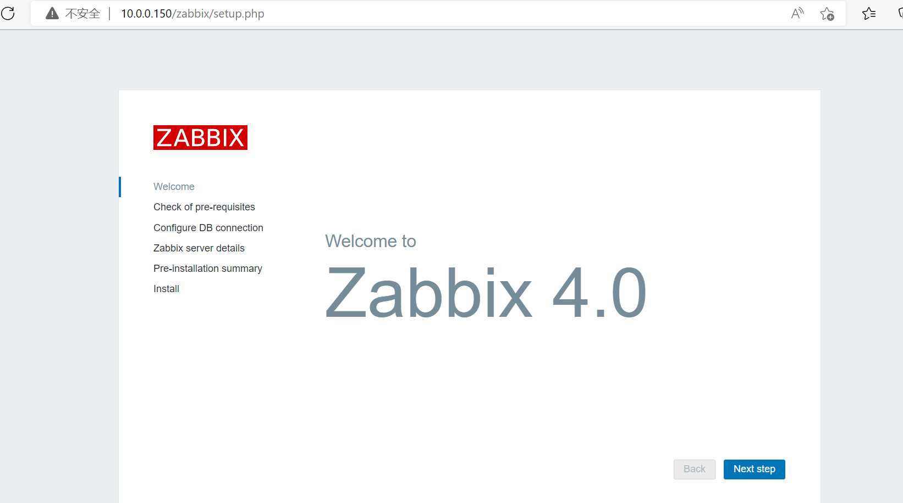</a></p>
<p>下一步，如果全部显示OK即可进行下一步</p>
<p><a href="">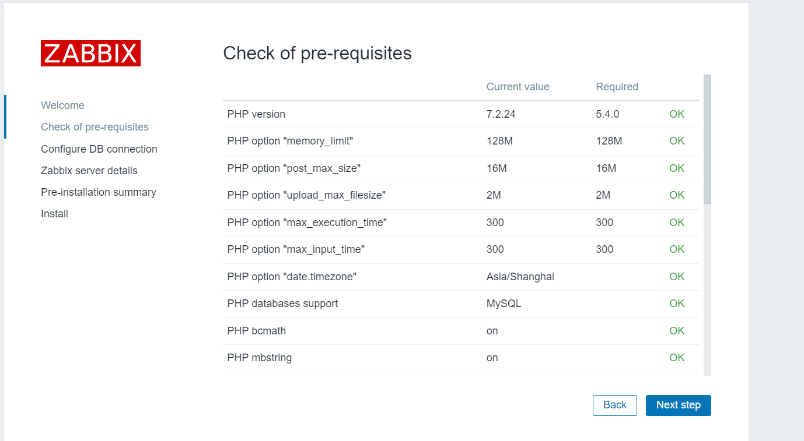</a></p>
<p>下一步输入数据库的信息</p>
<p><a href="">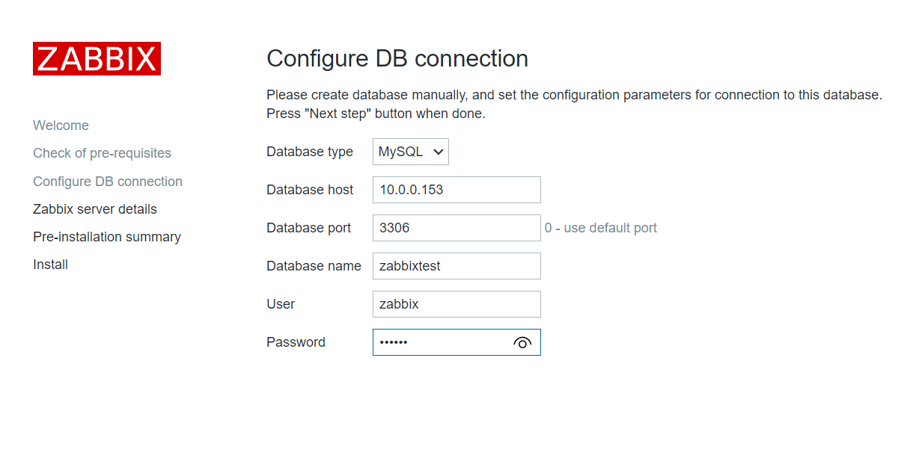</a></p>
<p>下一步设置zabbix</p>
<p><a href="">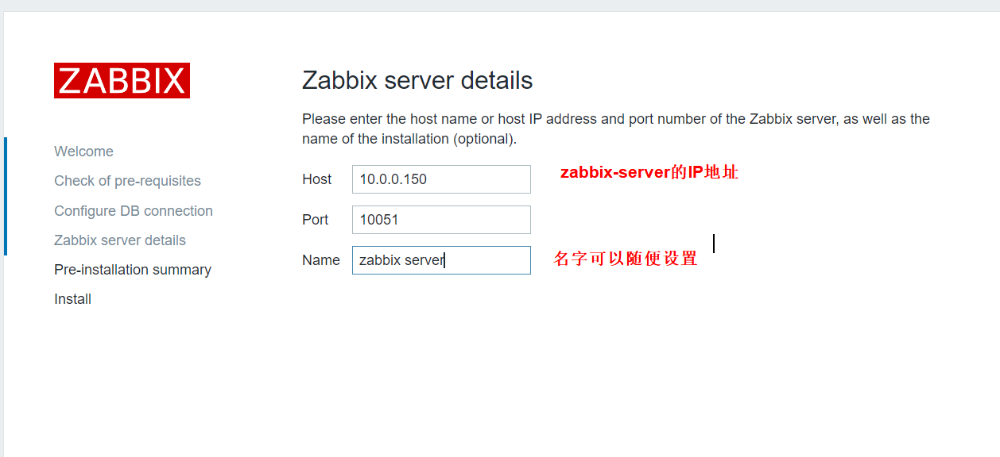</a></p>
<p>下一步显示输入的所有信息</p>
<p><a href="">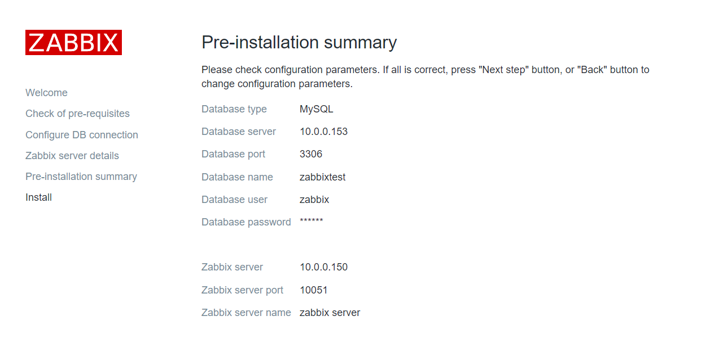</a></p>
<p>下一步显示创建完成，并提示信息放在的目录，如果更改可以去此路径下修改</p>
<p><a href="">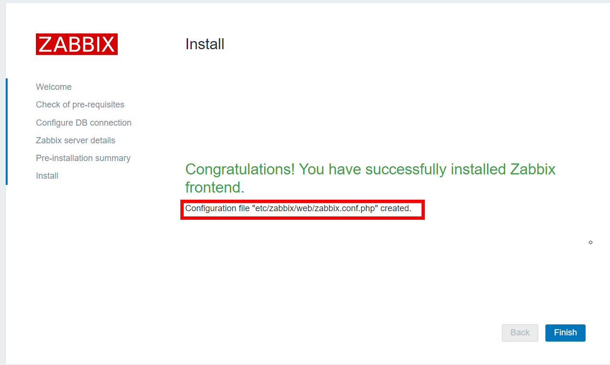</a></p>
<p>登录界面：初始账号：Admin  初始密码：zabbix</p>
<p><a href="">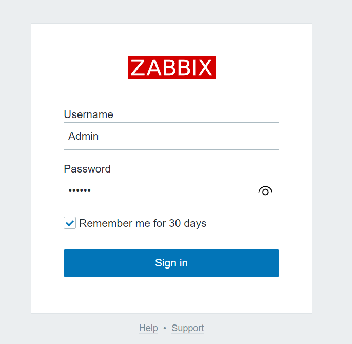</a></p>
<p><a href="">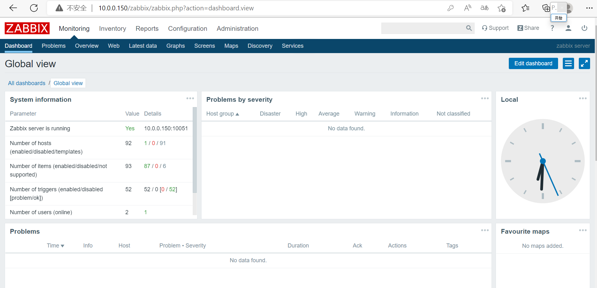</a></p>
<h1 id="二、安装zabbix5-0（server、agent2"><a href="#二、安装zabbix5-0（server、agent2" class="headerlink" title="二、安装zabbix5.0（server、agent2)"></a>二、安装zabbix5.0（server、agent2)</h1><p><a href="">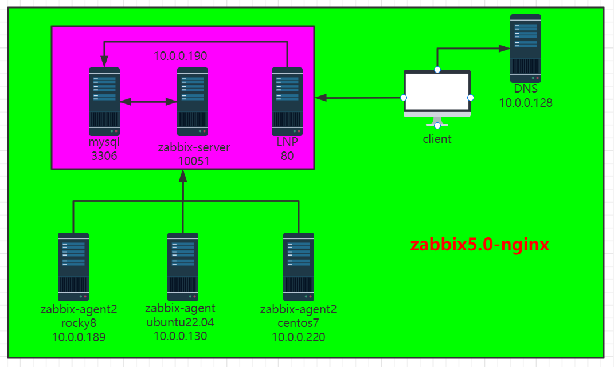</a></p>
<figure class="highlight sh"><table><tr><td class="gutter"><pre><span class="line">1</span><br><span class="line">2</span><br><span class="line">3</span><br><span class="line">4</span><br><span class="line">5</span><br><span class="line">6</span><br><span class="line">7</span><br><span class="line">8</span><br><span class="line">9</span><br><span class="line">10</span><br><span class="line">11</span><br><span class="line">12</span><br><span class="line">13</span><br><span class="line">14</span><br><span class="line">15</span><br><span class="line">16</span><br><span class="line">17</span><br><span class="line">18</span><br><span class="line">19</span><br><span class="line">20</span><br><span class="line">21</span><br><span class="line">22</span><br><span class="line">23</span><br><span class="line">24</span><br><span class="line">25</span><br><span class="line">26</span><br><span class="line">27</span><br><span class="line">28</span><br><span class="line">29</span><br><span class="line">30</span><br><span class="line">31</span><br><span class="line">32</span><br><span class="line">33</span><br><span class="line">34</span><br><span class="line">35</span><br><span class="line">36</span><br><span class="line">37</span><br><span class="line">38</span><br><span class="line">39</span><br><span class="line">40</span><br><span class="line">41</span><br><span class="line">42</span><br><span class="line">43</span><br><span class="line">44</span><br><span class="line">45</span><br><span class="line">46</span><br><span class="line">47</span><br><span class="line">48</span><br><span class="line">49</span><br><span class="line">50</span><br><span class="line">51</span><br><span class="line">52</span><br><span class="line">53</span><br><span class="line">54</span><br><span class="line">55</span><br><span class="line">56</span><br><span class="line">57</span><br><span class="line">58</span><br><span class="line">59</span><br><span class="line">60</span><br><span class="line">61</span><br><span class="line">62</span><br><span class="line">63</span><br><span class="line">64</span><br><span class="line">65</span><br><span class="line">66</span><br><span class="line">67</span><br><span class="line">68</span><br><span class="line">69</span><br><span class="line">70</span><br><span class="line">71</span><br></pre></td><td class="code"><pre><code class="hljs sh"><span class="hljs-comment">#安装server机器</span><br><span class="hljs-comment">#环境：rocky8+mysql+nginx+zabbix安装在一台机器上（生产环境中，mysql单独安装在一台机器）</span><br><br><span class="hljs-comment">#注意：因采用网址登录，所以需提前进行DNS域名解析</span><br>[root@Rocky ~]<span class="hljs-comment">#vim install_zabbix5.0_for_nginx_mysql.sh</span><br><span class="hljs-comment">#!/bin/bash</span><br>rpm -Uvh https://repo.zabbix.com/zabbix/5.0/rhel/8/x86_64/zabbix-release-5.0-1.el8.noarch.rpm<br>sed -i <span class="hljs-string">&#x27;s#http://repo.zabbix.com#https://mirrors.tuna.tsinghua.edu.cn/zabbix#&#x27;</span> /etc/yum.repos.d/zabbix.repo<br>dnf clean all<br>dnf -y install zabbix-server-mysql zabbix-web-mysql zabbix-nginx-conf zabbix-agent2<br>yum -y install mysql-server<br>systemctl <span class="hljs-built_in">enable</span> --now mysqld<br><span class="hljs-built_in">cat</span> &lt;&lt; <span class="hljs-string">EOF | mysql</span><br><span class="hljs-string">create database zabbix character set utf8 collate utf8_bin;</span><br><span class="hljs-string">create user zabbix@localhost identified by &#x27;123456&#x27;;</span><br><span class="hljs-string">grant all privileges on zabbix.* to zabbix@localhost;</span><br><span class="hljs-string">EOF</span><br>zcat /usr/share/doc/zabbix-server-mysql*/create.sql.gz | mysql -uzabbix -p123456  zabbix<br>sed -i.bak <span class="hljs-string">&#x27;/# DBPassword/a DBPassword=123456&#x27;</span> /etc/zabbix/zabbix_server.conf<br>systemctl start nginx<br>sed -i.bak <span class="hljs-string">&#x27;/^server/a\        listen 80;\n        server_name     zabbix.magedu.org; &#x27;</span> /etc/nginx/conf.d/zabbix.conf<br>sed -i.bak <span class="hljs-string">&#x27;/date.timezone/c php_value[date.timezone] = Asia/Shanghai&#x27;</span> /etc/php-fpm.d/zabbix.conf<br>systemctl restart zabbix-server zabbix-agent2 nginx php-fpm<br>systemctl <span class="hljs-built_in">enable</span> zabbix-server zabbix-agent2 nginx php-fpm<br>:wq<br><span class="hljs-comment">#以上就创建好了简单的安装脚本</span><br><br><span class="hljs-comment">#此时网站是英文环境，需提前安装中文包，才能设置为中文环境</span><br>[root@Rocky ~]<span class="hljs-comment">#yum -y install langpacks-zh_CN</span><br><span class="hljs-comment">#但图形里面会有一些乱码</span><br><br><span class="hljs-comment">#将Windows里的字体文件放入到zabbix-server主机里会解决此问题，Windows字体路径：控制面板\外观和个性化\字体</span><br><br><span class="hljs-comment">#将中文字体上传到 Zabbix Server 的目录 /usr/share/zabbix/assets/fonts 下</span><br>[root@Rocky ~]<span class="hljs-comment">#cd /usr/share/zabbix/assets/fonts</span><br>[root@Rocky fonts]<span class="hljs-comment">#ll</span><br>total 0<br>lrwxrwxrwx 1 root root 33 Dec  9 09:17 graphfont.ttf -&gt; /etc/alternatives/zabbix-web-font<br>[root@Rocky fonts]<span class="hljs-comment">#mv graphfont.ttf graphfont.ttf.bak</span><br>[root@Rocky fonts]<span class="hljs-comment">#ls</span><br>graphfont.ttf.bak<br>[root@Rocky fonts]<span class="hljs-comment">#rz -E</span><br>rz waiting to receive.<br>[root@Rocky fonts]<span class="hljs-comment">#ls</span><br>graphfont.ttf.bak  simsun.ttc<br>[root@Rocky fonts]<span class="hljs-comment">#cp simsun.ttc graphfont.ttf   #将上传的字体设置为linux的字体</span><br>[root@Rocky fonts]<span class="hljs-comment">#ls</span><br>graphfont.ttf  graphfont.ttf.bak  simsun.ttc<br><br>**********************************************************************************<br><br><span class="hljs-comment">#安装agent2</span><br><span class="hljs-comment">#Rocky8.6系统,简单脚本如下</span><br>[root@Rocky ~]<span class="hljs-comment">#vim install_zabbix5.0_agent2_for_rocky8</span><br>rpm -Uvh https://repo.zabbix.com/zabbix/5.0/rhel/8/x86_64/zabbix-release-5.0-1.el8.noarch.rpm<br>sed -i <span class="hljs-string">&#x27;s#http://repo.zabbix.com#https://mirrors.tuna.tsinghua.edu.cn/zabbix#&#x27;</span> /etc/yum.repos.d/zabbix.repo<br>dnf clean all<br>dnf -y install zabbix-agent2<br>sed -i.bak <span class="hljs-string">&#x27;/^Server=/c Server=10.0.0.190&#x27;</span> /etc/zabbix/zabbix_agent2.conf  <span class="hljs-comment">#zabbix_server安装在10.0.0.190(ip地址也可以写成网址，相对应的需要在本机上解析此网址)</span><br> <span class="hljs-comment">#其中两种方法</span><br> <span class="hljs-comment">#①在/etc/hosts里面添加 10.0.0.190  网址</span><br> <span class="hljs-comment">#②在/etc/sysconfig/network-scripts/ifcfg-eth0里面将DNS指向10.0.0.128（此ip是自己设置的DNS解析服务器，里面有10.0.0.190所对应的网址）</span><br>systemctl start zabbix-agent2<br>systemctl <span class="hljs-built_in">enable</span> zabbix-agent2<br>:wq<br><br><br>**********************************************************************************<br><br><span class="hljs-comment">#此时需要在zabbix_server进行设置，允许监视zabbix_agent2</span><br><span class="hljs-comment">#操作步骤如下图</span><br></code></pre></td></tr></table></figure>

<p><a href="">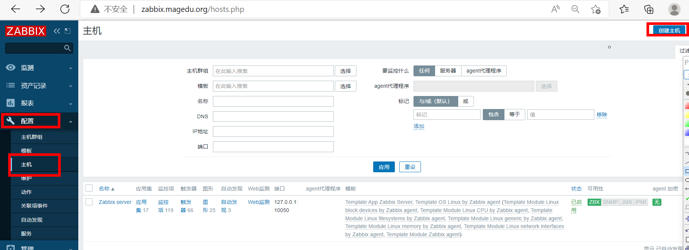</a></p>
<p>创建主机</p>
<p><a href="">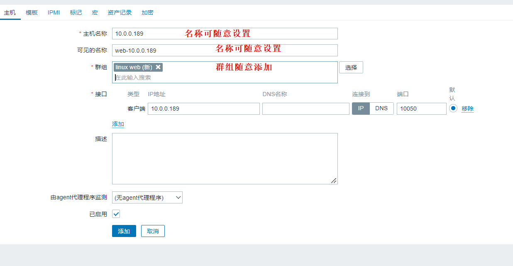</a></p>
<p>添加完成后（红框里面的是上面设置的可见名称）</p>
<p><a href="">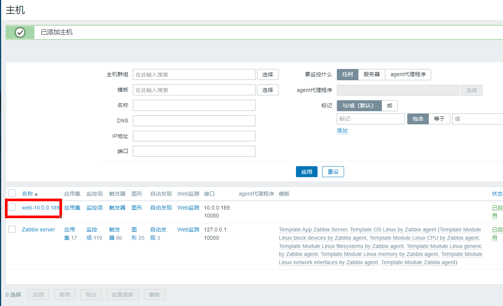</a></p>
<p>此时需要设置检测agent2哪些参数</p>
<p><a href="">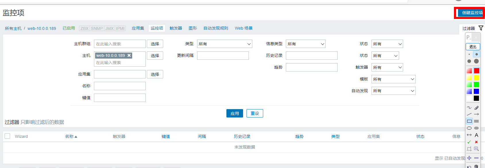</a></p>
<p>创建监控项，更快捷的方法是使用模板</p>
<p><a href="">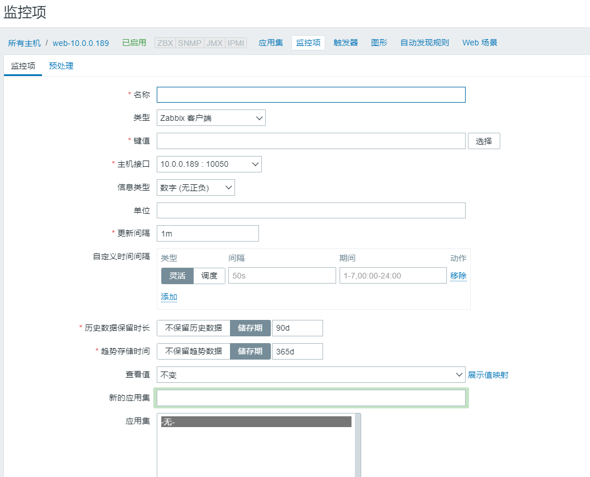</a></p>
<p>模板选择（系统提供的制式监控参数选项）</p>
<p><a href="">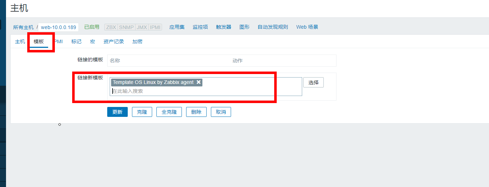</a></p>
<p><a href="">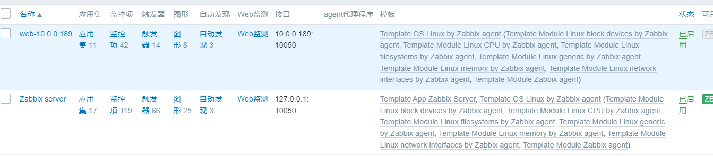</a></p>
<p>#注意此时是被动模式（server问一个参数，agent2回复一个参数），被动模式是默认模式（后期可以更改为主动模式）</p>
<h1 id="三、Windows安装zabbix"><a href="#三、Windows安装zabbix" class="headerlink" title="三、Windows安装zabbix"></a>三、Windows安装zabbix</h1><p><a href="">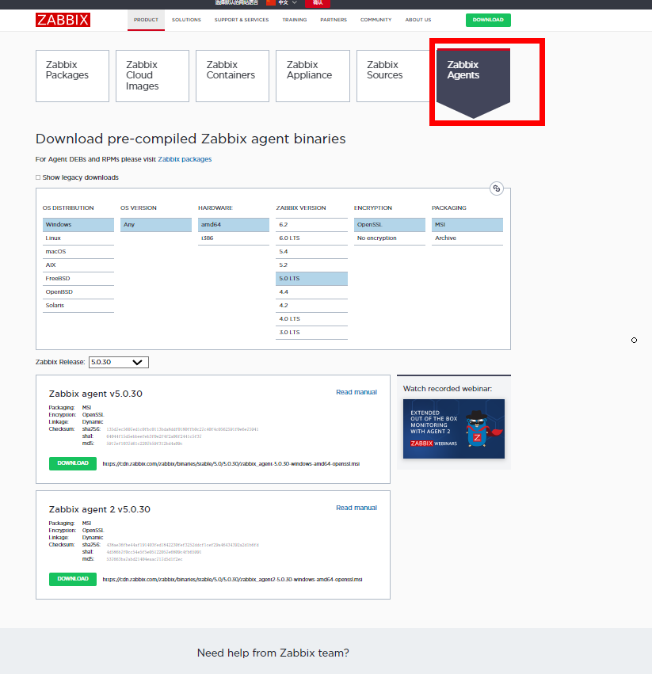</a></p>
<p>点击下载的包进行安装</p>
<p><a href="">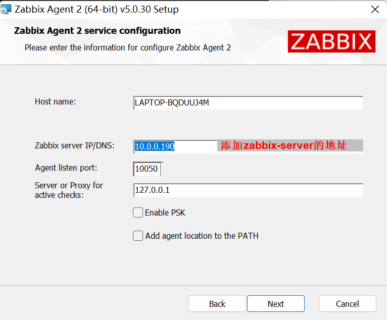</a></p>
<p>其他默认下一步进行安装</p>
<p>安装完成后，可以查看10050端口是否启动</p>
<p><a href="">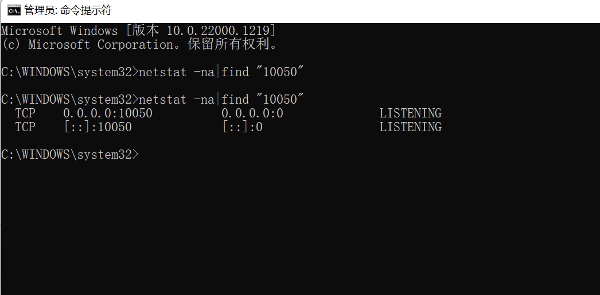</a></p>
<p>另外可以在服务里查看运行的程序</p>
<p><a href="">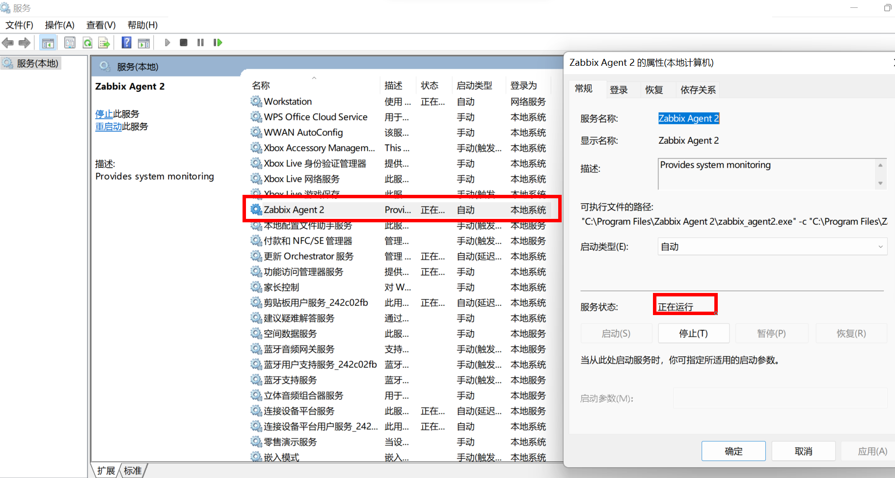</a></p>
<p>zabbix的配置文件路径：C:\Program Files\Zabbix Agent 2</p>
<p><a href="">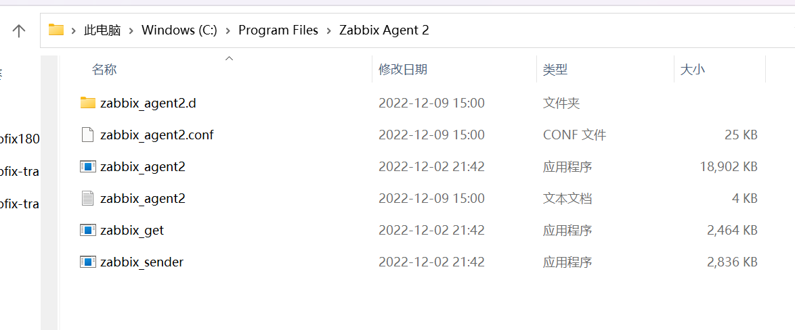</a></p>
<p>下一步需要在zabbix-server创建主机</p>
<p><a href="">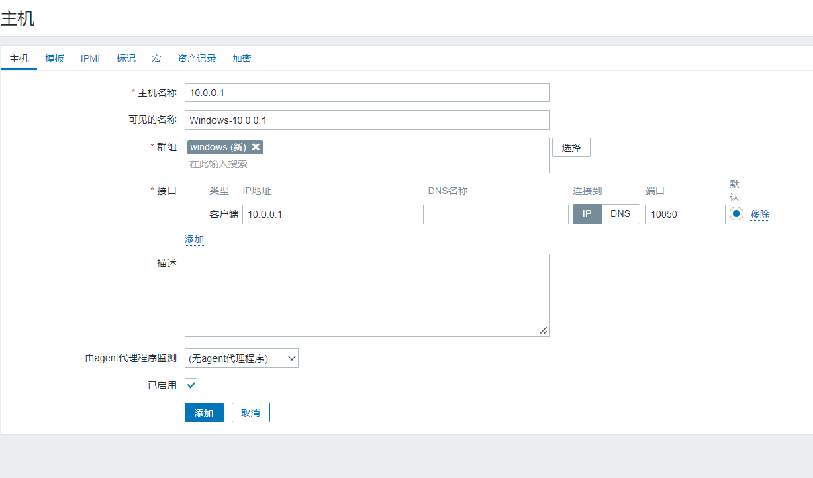</a></p>
<p>下一步添加模板</p>
<p><a href="">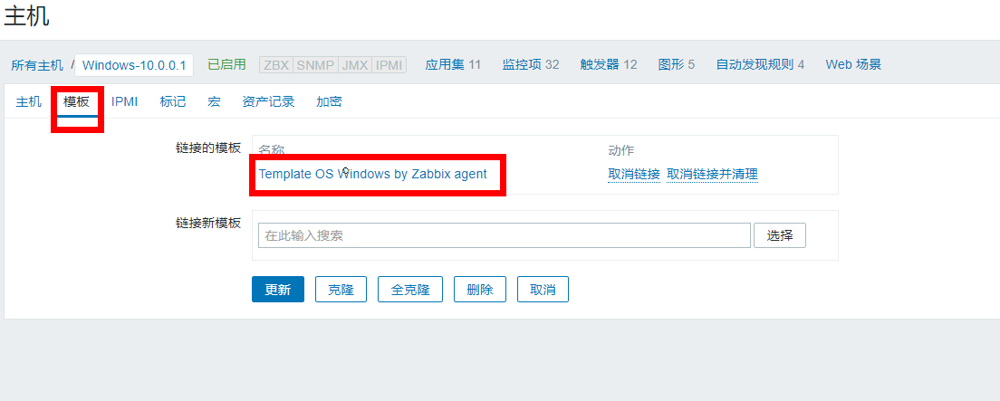</a></p>
<h1 id="四、迁移mysql到独立服务器"><a href="#四、迁移mysql到独立服务器" class="headerlink" title="四、迁移mysql到独立服务器"></a>四、迁移mysql到独立服务器</h1><figure class="highlight basic"><table><tr><td class="gutter"><pre><span class="line">1</span><br><span class="line">2</span><br><span class="line">3</span><br><span class="line">4</span><br><span class="line">5</span><br></pre></td><td class="code"><pre><code class="hljs basic"><span class="hljs-symbol">0 </span>将zabbix-server服务停止（最好在无人访问的时候停止）<br><span class="hljs-symbol">1 </span>将mysql上的所有数据备份出来，但如果不先停止服务，则一直在采集数据到mysql<br><span class="hljs-symbol">2 </span>恢复到独立同一版本同一配置的mysql服务器<br><span class="hljs-symbol">3 </span>修改zabbix server指向新的mysql服务器地址<br><span class="hljs-symbol">4 </span>修改PHP指向新的mysql服务器地址<br></code></pre></td></tr></table></figure>

<p><a href="">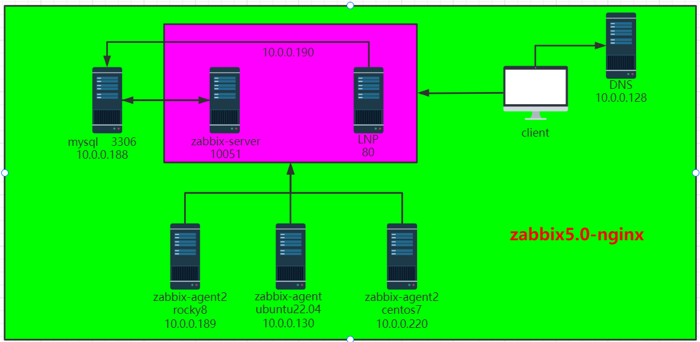</a></p>
<h2 id="4-1、备份数据到独立mysql服务器上"><a href="#4-1、备份数据到独立mysql服务器上" class="headerlink" title="4.1、备份数据到独立mysql服务器上"></a>4.1、备份数据到独立mysql服务器上</h2><figure class="highlight sh"><table><tr><td class="gutter"><pre><span class="line">1</span><br><span class="line">2</span><br><span class="line">3</span><br><span class="line">4</span><br><span class="line">5</span><br><span class="line">6</span><br><span class="line">7</span><br><span class="line">8</span><br><span class="line">9</span><br><span class="line">10</span><br><span class="line">11</span><br><span class="line">12</span><br><span class="line">13</span><br><span class="line">14</span><br><span class="line">15</span><br><span class="line">16</span><br><span class="line">17</span><br><span class="line">18</span><br><span class="line">19</span><br><span class="line">20</span><br><span class="line">21</span><br><span class="line">22</span><br><span class="line">23</span><br><span class="line">24</span><br><span class="line">25</span><br><span class="line">26</span><br><span class="line">27</span><br><span class="line">28</span><br><span class="line">29</span><br><span class="line">30</span><br><span class="line">31</span><br><span class="line">32</span><br><span class="line">33</span><br><span class="line">34</span><br><span class="line">35</span><br><span class="line">36</span><br><span class="line">37</span><br><span class="line">38</span><br><span class="line">39</span><br><span class="line">40</span><br><span class="line">41</span><br><span class="line">42</span><br><span class="line">43</span><br><span class="line">44</span><br><span class="line">45</span><br><span class="line">46</span><br><span class="line">47</span><br><span class="line">48</span><br><span class="line">49</span><br></pre></td><td class="code"><pre><code class="hljs sh"><span class="hljs-comment">#在10.0.0.188上安装mysql服务器</span><br>[root@mysql-server ~]<span class="hljs-comment">#yum -y install mysql-server</span><br>[root@mysql-server ~]<span class="hljs-comment">#systemctl enable --now mysqld</span><br><br><span class="hljs-comment">#在zabbix-server上备份数据，并传至10.0.0.188</span><br>[root@zabbix_server ~]<span class="hljs-comment">#systemctl stop zabbix-server.service </span><br>[root@zabbix_server ~]<span class="hljs-comment">#mysqldump -uroot -A --single-transaction --default-character-set=utf8 &gt; all.sql             #备份数据</span><br>[root@zabbix_server ~]<span class="hljs-comment">#ll</span><br>total 10260<br>-rw-r--r--  1 root root 10496967 Dec  9 15:51 all.sql<br>-rw-------. 1 root root     1264 Aug 25 16:39 anaconda-ks.cfg<br>-rw-r--r--  1 root root     1077 Dec  9 09:40 install_zabbix5.0_for_nginx_mysql.sh<br>[root@zabbix_server ~]<span class="hljs-comment">#scp all.sql 10.0.0.188:</span><br><br><span class="hljs-comment">#将数据导入数据库</span><br>[root@mysql-server ~]<span class="hljs-comment">#mysql &lt; all.sql</span><br>[root@mysql-server ~]<span class="hljs-comment">#mysql</span><br>mysql&gt; show databases;            <span class="hljs-comment">#查看zabbix数据库已导入</span><br>+--------------------+<br>| Database           |<br>+--------------------+<br>| information_schema |<br>| mysql              |<br>| performance_schema |<br>| sys                |<br>| zabbix             |<br>+--------------------+<br>mysql&gt; select user,host from mysql.user;     <span class="hljs-comment">#查看zabbix用户已导入，但账号只能本地使用</span><br>+------------------+-----------+<br>| user             | host      |<br>+------------------+-----------+<br>| mysql.infoschema | localhost |<br>| mysql.session    | localhost |<br>| mysql.sys        | localhost |<br>| root             | localhost |<br>| zabbix           | localhost |<br>+------------------+-----------+<br><span class="hljs-comment">#查看数据库的字符集</span><br>mysql&gt; show create database zabbix;<br>+----------+---------------------------------------------------------------------------------------------------------------------+<br>| Database | Create Database                                                                                                     |<br>+----------+---------------------------------------------------------------------------------------------------------------------+<br>| zabbix   | CREATE DATABASE `zabbix` /*!40100 DEFAULT CHARACTER SET utf8 COLLATE utf8_bin */ /*!80016 DEFAULT ENCRYPTION=<span class="hljs-string">&#x27;N&#x27;</span> */ |<br>+----------+---------------------------------------------------------------------------------------------------------------------+<br><br><span class="hljs-comment">#创建账号和授权</span><br>mysql&gt; create user zabbix@<span class="hljs-string">&#x27;10.0.0.%&#x27;</span> identified by <span class="hljs-string">&#x27;123456&#x27;</span>;<br>mysql&gt; grant all privileges on zabbix.* to zabbix@<span class="hljs-string">&#x27;10.0.0.%&#x27;</span>;<br><br></code></pre></td></tr></table></figure>

<h2 id="4-2、修改zabbix-server和PHP配置"><a href="#4-2、修改zabbix-server和PHP配置" class="headerlink" title="4.2、修改zabbix server和PHP配置"></a>4.2、修改zabbix server和PHP配置</h2><figure class="highlight sh"><table><tr><td class="gutter"><pre><span class="line">1</span><br><span class="line">2</span><br><span class="line">3</span><br><span class="line">4</span><br><span class="line">5</span><br><span class="line">6</span><br><span class="line">7</span><br><span class="line">8</span><br><span class="line">9</span><br><span class="line">10</span><br><span class="line">11</span><br><span class="line">12</span><br><span class="line">13</span><br><span class="line">14</span><br><span class="line">15</span><br></pre></td><td class="code"><pre><code class="hljs sh">[root@zabbix_server ~]<span class="hljs-comment">#vim /etc/zabbix/zabbix_server.conf</span><br>DBHost=10.0.0.188                <span class="hljs-comment">#将localhost更改为10.0.0.188</span><br>:wq<br>[root@zabbix_server ~]<span class="hljs-comment">#systemctl restart zabbix-server.service</span><br><br>[root@zabbix_server ~]<span class="hljs-comment">#systemctl stop mysqld</span><br>[root@zabbix_server ~]<span class="hljs-comment">#systemctl disable mysqld</span><br><span class="hljs-comment">#关闭旧数据库后PHP页面无法打开</span><br><br><span class="hljs-comment">#修改PHP配置文件</span><br>[root@zabbix_server ~]<span class="hljs-comment">#vim /etc/zabbix/web/zabbix.conf.php </span><br><span class="hljs-variable">$DB</span>[<span class="hljs-string">&#x27;SERVER&#x27;</span>]                   = <span class="hljs-string">&#x27;10.0.0.188&#x27;</span>;   <span class="hljs-comment">#将localhost更改为10.0.0.188</span><br>:wq<br><span class="hljs-comment">#此时就可以正常访问了</span><br><br></code></pre></td></tr></table></figure>

<h1 id="五、创建自定义监控项"><a href="#五、创建自定义监控项" class="headerlink" title="五、创建自定义监控项"></a>五、创建自定义监控项</h1><p><a href="">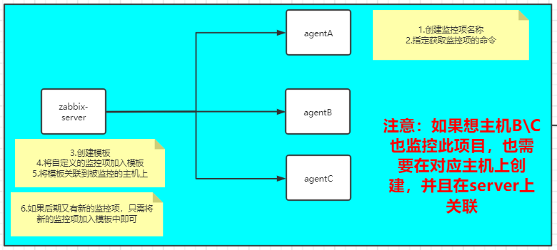</a></p>
<h2 id="5-1、在agent主机上创建监控项"><a href="#5-1、在agent主机上创建监控项" class="headerlink" title="5.1、在agent主机上创建监控项"></a>5.1、在agent主机上创建监控项</h2><ul>
<li><p>在配置文件里添加监控项（/etc/zabbix/zabbix_agent2.conf），或者在/etc/zabbix/zabbix_agent2.d/下创建*.conf文件</p>
<figure class="highlight vim"><table><tr><td class="gutter"><pre><span class="line">1</span><br></pre></td><td class="code"><pre><code class="hljs vim">内容格式：UserParameter=<span class="hljs-symbol">&lt;key&gt;</span>,&lt;<span class="hljs-keyword">shell</span> <span class="hljs-keyword">command</span>&gt;<br></code></pre></td></tr></table></figure></li>
</ul>
<figure class="highlight sh"><table><tr><td class="gutter"><pre><span class="line">1</span><br><span class="line">2</span><br><span class="line">3</span><br><span class="line">4</span><br><span class="line">5</span><br><span class="line">6</span><br><span class="line">7</span><br><span class="line">8</span><br><span class="line">9</span><br><span class="line">10</span><br><span class="line">11</span><br><span class="line">12</span><br><span class="line">13</span><br><span class="line">14</span><br><span class="line">15</span><br><span class="line">16</span><br><span class="line">17</span><br><span class="line">18</span><br><span class="line">19</span><br><span class="line">20</span><br></pre></td><td class="code"><pre><code class="hljs sh"><span class="hljs-comment">#例如：</span><br>[root@Rocky ~]<span class="hljs-comment">#cd /etc/zabbix/zabbix_agent2.d/</span><br>[root@Rocky zabbix_agent2.d]<span class="hljs-comment">#ls</span><br>[root@Rocky zabbix_agent2.d]<span class="hljs-comment">#vim user_login_count.conf</span><br>UserParameter=user_login_count，<span class="hljs-built_in">who</span>|<span class="hljs-built_in">wc</span> -l<br><span class="hljs-comment">#(user_login_count是监控项名称，who|wc -l是获取监控项的命令）</span><br>:wq<br><br><span class="hljs-comment">#在agent的机器上可以使用命令检测设置的监控项是否正确</span><br>[root@Rocky zabbix_agent2.d]<span class="hljs-comment">#zabbix_agent2 -t user_login_count</span><br>user_login_count                              [s|3]<br><span class="hljs-comment">#但此时zabbix-server检测不到</span><br>[root@zabbix_server ~]<span class="hljs-comment">#zabbix_get  -s 10.0.0.189 -k   user_login_count</span><br>ZBX_NOTSUPPORTED: Unknown metric user_login_count<br><br><span class="hljs-comment">#重启agent才能在zabbix-server上获取监控项</span><br>[root@Rocky zabbix_agent2.d]<span class="hljs-comment">#systemctl restart zabbix-agent2</span><br>[root@zabbix_server ~]<span class="hljs-comment">#zabbix_get  -s 10.0.0.189 -k   user_login_count</span><br>4<br><span class="hljs-comment">#zabbix_get  -s  ip(agent的地址） -k   user_login_count (注意：zabbix_get需要提前安装zabbix-get包</span><br></code></pre></td></tr></table></figure>

<h2 id="5-2、在zabbix-server增加监控项"><a href="#5-2、在zabbix-server增加监控项" class="headerlink" title="5.2、在zabbix-server增加监控项"></a>5.2、在zabbix-server增加监控项</h2><h3 id="5-2-1、单独添加监控项"><a href="#5-2-1、单独添加监控项" class="headerlink" title="5.2.1、单独添加监控项"></a>5.2.1、单独添加监控项</h3><p>内容填写完后，先进行测试，如果测试出结果来，则说明设置正确，然后再点添加</p>
<p><a href="">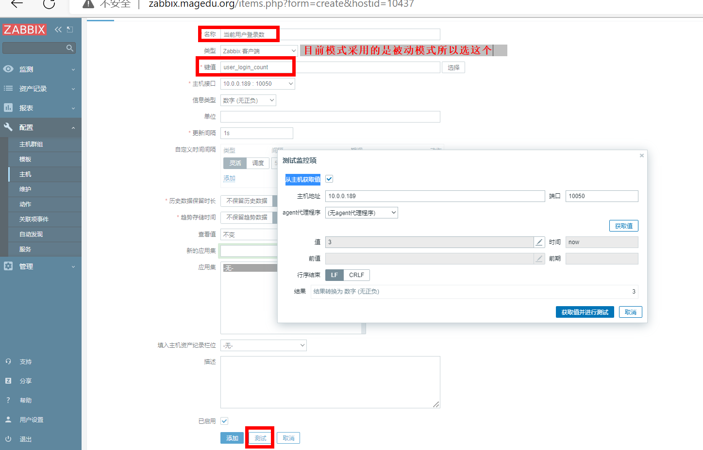</a></p>
<h3 id="5-2-2、创建新模版，在模板里添加监控项"><a href="#5-2-2、创建新模版，在模板里添加监控项" class="headerlink" title="5.2.2、创建新模版，在模板里添加监控项"></a>5.2.2、创建新模版，在模板里添加监控项</h3><p>先创建模板</p>
<p><a href="">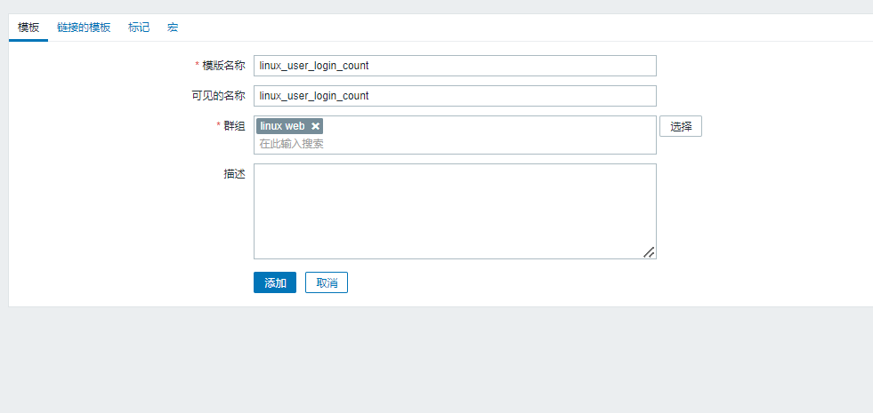</a></p>
<p>添加监控项</p>
<p><a href="">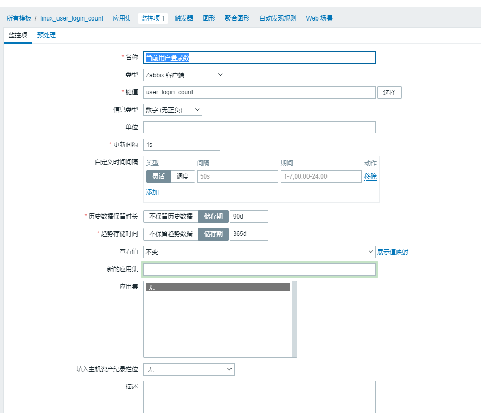</a></p>
<h1 id="六、设置为主动模式"><a href="#六、设置为主动模式" class="headerlink" title="六、设置为主动模式"></a>六、设置为主动模式</h1><p>Zabbix 有两种工作模式: 主动和被动模式</p>
<p>无论是模式还是被动模式，都是站在zabbix agent 角度来说的工作模式</p>
<p><strong>主动模式和被动模式都是相对zabbix agent而言的</strong></p>
<p>Zabbix默认是被动模式，如果有100个监控项，被动模式需要 Zabbix Server找 Zabbix Agent要100次</p>
<p>主动模式是Zabbix Server给 Zabbix Agent发送一个包括100个监控项的任务清单，Zabbix Agent根据任务清单，采集好100个监控项的值，主动汇报给 Zabbix Server这100个监控项，Zabbix Agent主动模式只需要发送一次数据，大大提高了传输效率。</p>
<ul>
<li><p>被动模式: Server 向 Agent 请求获取监控项的数据，Agent返回数据。此为默认模式,如果有100个监控项,则需要100次交互</p>
</li>
<li><p>主动模式: Agent 请求 Server 获取主动的监控项列表，并主动将监控项内需要检测的数据提交给server/proxy,如有100个监控项,只需要1次交互即可</p>
</li>
</ul>
<p>注意: 两种模式可以在Zabbix Server上同时存在,可以将一部分监控项设为主动,其它设为被动模式</p>
<p><strong>被动监测通信过程如下</strong>:</p>
<figure class="highlight plaintext"><table><tr><td class="gutter"><pre><span class="line">1</span><br><span class="line">2</span><br><span class="line">3</span><br><span class="line">4</span><br><span class="line">5</span><br><span class="line">6</span><br><span class="line">7</span><br></pre></td><td class="code"><pre><code class="hljs ABAP">Server打开一个TCP连接<br>Server发送请求agent.ping<br>Agent接收到请求并且响应&lt;HEADER&gt;&lt;DATALEN&gt;<br>Server处理接收到的数据<br>关闭TCP连接<br>被动模式每获取一个监控项都需要打开一个tcp连接，这样当监控项越来越多时，Zabbix Server会打开很<br>多端口,就会出现server端性能瓶颈问题。<br></code></pre></td></tr></table></figure>

<p><strong>主动模式监测通信过程如下</strong>:</p>
<figure class="highlight plaintext"><table><tr><td class="gutter"><pre><span class="line">1</span><br><span class="line">2</span><br><span class="line">3</span><br><span class="line">4</span><br><span class="line">5</span><br></pre></td><td class="code"><pre><code class="hljs ABAP">zabbix agent 首先向ServerActive配置的IP请求获取active items，获取并提交active items数<br>据值给server或者proxy。<br>zabbix多久获取一次active items？<br>它会根据agent的配置文件中的RefreshActiveChecks的频率进行，如果获取失败，那么将会在60秒之后<br>重试。<br></code></pre></td></tr></table></figure>

<h2 id="6-1、主动模式介绍"><a href="#6-1、主动模式介绍" class="headerlink" title="6.1、主动模式介绍"></a>6.1、主动模式介绍</h2><p>主动模式是由每个zabbix agent 打开本机的随机端口, 主动向 Zabbix Server (或者Zabbix Proxy)的10051端口发起tcp连接请求</p>
<p>主动模式下必须在zabbix agent配置文件中指定zabbix server的IP或者主机名(必须可以被解析为IP地 址)，在连接到zabbix server之前zabbix agent是不知道自己要采集那些数据以及间隔多久采集一次数据的，然后在连接到zabbix server以后获取到自己的监控项和数据采集间隔周期时间，然后再根据监控项采集数据并返回给zabbix server，在主动模式下不再需要zabbix serve向zabbix agent发起连接请求，因此主动模式在一定程度上可减轻zabbix server打开的本地随机端口和进程数，在一定程度就减轻了zabbix server的压力。经过优化后可以轻松监控2000台，甚至5000以上的主机</p>
<p>以下场景下生产推荐使用主动模式</p>
<ul>
<li><p>Zabbix Server 出现性能瓶颈, 监控队列出现大量延迟的监控项,告警不及时</p>
</li>
<li><p>监控主机超过 500 台以上</p>
</li>
</ul>
<h2 id="6-2、zabbix-agent2实现主动模式"><a href="#6-2、zabbix-agent2实现主动模式" class="headerlink" title="6.2、zabbix agent2实现主动模式"></a>6.2、zabbix agent2实现主动模式</h2><p>在Zabbix Agent实现主动模式流程</p>
<ul>
<li><p>在 Zabbix Agent 配置主机模式相关配置</p>
</li>
<li><p>在 Zabbix Server 创建配置有主动模式监控项的模板</p>
</li>
<li><p>关联主动模板至支持主动模式的 Agent 主机</p>
</li>
</ul>
<p><strong>注意:基于原被动模板克隆生成的主动模式模板,不是所有监控项都能改为主动模,比如agent.ping监控项如果改为主动模式, ZBX 提示将无法变绿</strong></p>
<h3 id="6-2-1、在zabbix-agent2配置主动模式"><a href="#6-2-1、在zabbix-agent2配置主动模式" class="headerlink" title="6.2.1、在zabbix agent2配置主动模式"></a>6.2.1、在zabbix agent2配置主动模式</h3><p>Zabbix Server 主动和被动模式无需配置即可支持,还可以支持多个主动和被动模式的Zabbix Agent 同时存在</p>
<p>Zabbix Agent 默认是被动模式，需要修改配置才能支持主动模式</p>
<p>Zabbix Agent 的关健配置有下面三项</p>
<figure class="highlight sh"><table><tr><td class="gutter"><pre><span class="line">1</span><br><span class="line">2</span><br><span class="line">3</span><br></pre></td><td class="code"><pre><code class="hljs sh">Server=&lt;Zabbix Server&gt;          <span class="hljs-comment">#被动模式指向 Zabbix Server的IP或FQDN,默认模式</span><br>ServerActive=&lt;Zabbix Server&gt;    <span class="hljs-comment">#主动模式指向 Zabbix Server的IP或FQDN</span><br>Hostname=&lt;当前主机IP&gt;            <span class="hljs-comment">#当前主机的IP,此项必须和Zabbix Server中设置的主机名称相同</span><br></code></pre></td></tr></table></figure>

<figure class="highlight sh"><table><tr><td class="gutter"><pre><span class="line">1</span><br><span class="line">2</span><br><span class="line">3</span><br><span class="line">4</span><br><span class="line">5</span><br><span class="line">6</span><br></pre></td><td class="code"><pre><code class="hljs sh">[root@zabbix_agent2 ~]<span class="hljs-comment">#vim /etc/zabbix/zabbix_agent2.conf</span><br>ServerActive=10.0.0.190<br>Hostname=10.0.0.189<br>Timeout=30                       <span class="hljs-comment">#建议修改</span><br>:wq<br>[root@zabbix_agent2 ~]<span class="hljs-comment">#systemctl restart zabbix-agent2.service</span><br></code></pre></td></tr></table></figure>

<h3 id="6-2-2、基于现有模板将包含的监控项修改为主动模式的监控项"><a href="#6-2-2、基于现有模板将包含的监控项修改为主动模式的监控项" class="headerlink" title="6.2.2、基于现有模板将包含的监控项修改为主动模式的监控项"></a>6.2.2、基于现有模板将包含的监控项修改为主动模式的监控项</h3><p><strong>注意</strong>: Zabbix 5.0 内置了主动模式的模板 Template OS Linux by Zabbix agent active 无需修改</p>
<p>Zabbix4.0 之前没有主动模式的模板,需要自行修改</p>
<p>如果自己创建的模板是被动模式，也可以改成主动模式</p>
<p>模板—&gt;选中监控项—&gt;点击批量更新—&gt;选中类型（主动式）</p>
<p><a href="">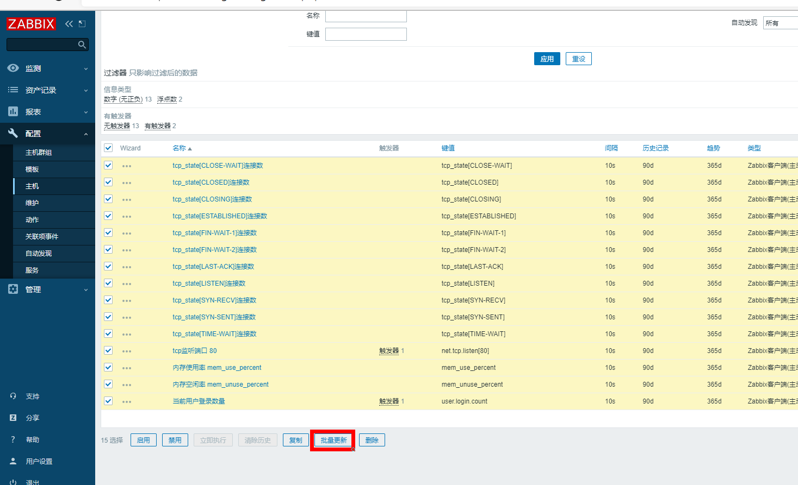</a></p>
<p><a href="">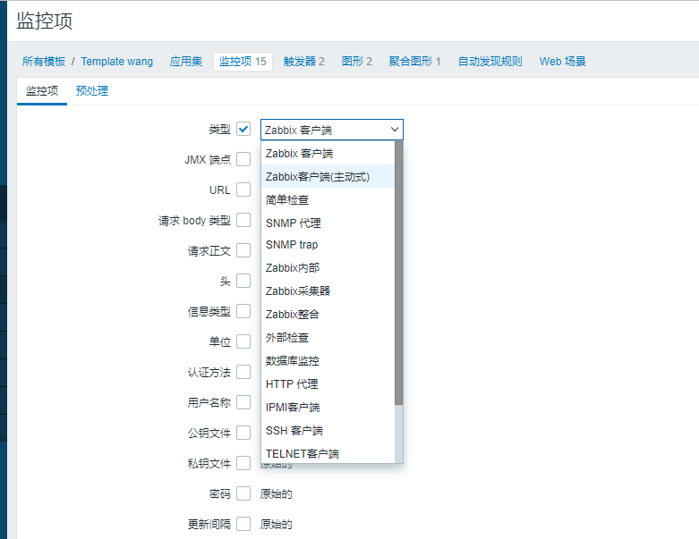</a></p>
<h1 id="七、监控java程序"><a href="#七、监控java程序" class="headerlink" title="七、监控java程序"></a>七、监控java程序</h1><p><a href="">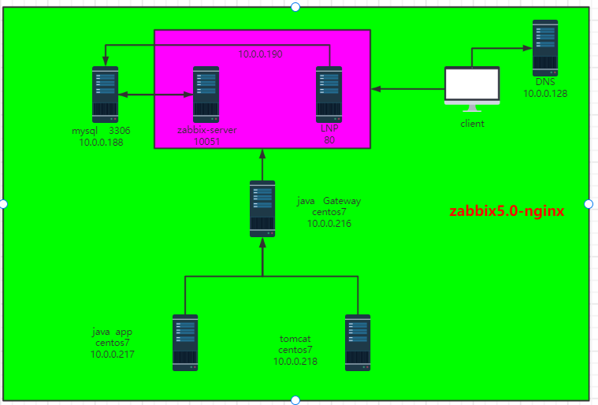</a></p>
<h2 id="7-1、部署tomcat服务并开启JMX功能"><a href="#7-1、部署tomcat服务并开启JMX功能" class="headerlink" title="7.1、部署tomcat服务并开启JMX功能"></a>7.1、部署tomcat服务并开启JMX功能</h2><figure class="highlight sh"><table><tr><td class="gutter"><pre><span class="line">1</span><br><span class="line">2</span><br><span class="line">3</span><br><span class="line">4</span><br><span class="line">5</span><br><span class="line">6</span><br><span class="line">7</span><br><span class="line">8</span><br><span class="line">9</span><br><span class="line">10</span><br></pre></td><td class="code"><pre><code class="hljs sh">[root@tomcat ~]<span class="hljs-comment">#rz -E</span><br>rz waiting to receive.<br>[root@tomcat ~]<span class="hljs-comment">#rz -E</span><br>rz waiting to receive.<br>[root@tomcat ~]<span class="hljs-comment">#rz -E</span><br>rz waiting to receive.<br>[root@tomcat ~]<span class="hljs-comment">#ls</span><br>install_tomcat.sh apache-tomcat-9.0.59.tar.gz jdk-11.0.14_linux-x64_bin.tar.gz<br>[root@tomcat ~]<span class="hljs-comment">#bash install_tomcat.sh</span><br><span class="hljs-comment">#此时8080端口已打开</span><br></code></pre></td></tr></table></figure>

<p><a href="">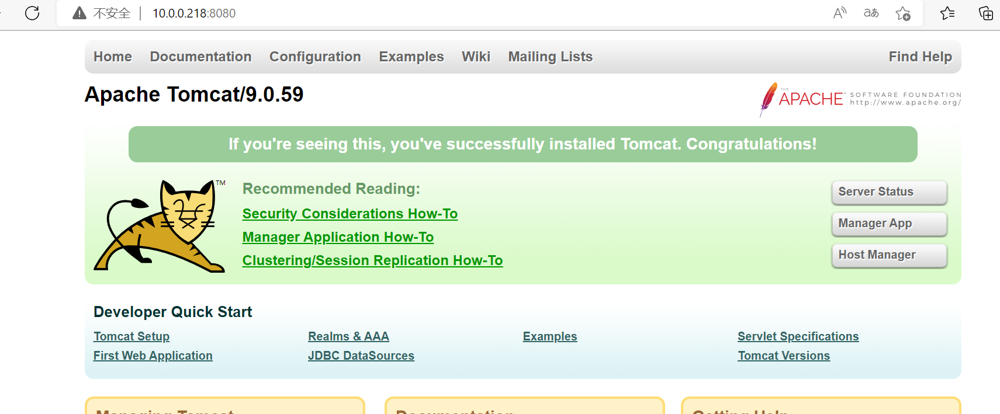</a></p>
<p><strong>tomcat 开启远程 JMX 环境配置</strong></p>
<figure class="highlight sh"><table><tr><td class="gutter"><pre><span class="line">1</span><br><span class="line">2</span><br><span class="line">3</span><br><span class="line">4</span><br><span class="line">5</span><br><span class="line">6</span><br><span class="line">7</span><br></pre></td><td class="code"><pre><code class="hljs sh">vim /usr/local/tomcat/bin/catalina.sh<br>CATALINA_OPTS=<span class="hljs-string">&quot;<span class="hljs-variable">$CATALINA__OPTS</span></span><br><span class="hljs-string">-Dcom.sun.management.jmxremote                 #启用远程监控JMX </span><br><span class="hljs-string">-Djava.rmi.server.hostname=&lt;JAVA主机IP&gt;   #是tomcat主机自己的IP地址,不是zabbix服务器的地址</span><br><span class="hljs-string">-Dcom.sun.management.jmxremote.port=XXXXX       #默认启动的JMX端口号，要和zabbix添加主机时候的端口一致即可</span><br><span class="hljs-string">-Dcom.sun.management.jmxremote.authenticate=false    #不使用用户名密码</span><br><span class="hljs-string">-Dcom.sun.management.jmxremote.ssl=false&quot;</span>            <span class="hljs-comment">#不使用ssl认证</span><br></code></pre></td></tr></table></figure>


<figure class="highlight sh"><table><tr><td class="gutter"><pre><span class="line">1</span><br><span class="line">2</span><br><span class="line">3</span><br><span class="line">4</span><br><span class="line">5</span><br><span class="line">6</span><br><span class="line">7</span><br></pre></td><td class="code"><pre><code class="hljs sh"><span class="hljs-comment">#打开jmx功能</span><br>[root@tomcat ~]<span class="hljs-comment">#vim /usr/local/tomcat/bin/catalina.sh</span><br>CATALINA_OPTS=<span class="hljs-string">&quot;<span class="hljs-variable">$CATALINA__OPTS</span> -Dcom.sun.management.jmxremote -Dcom.sun.management.jmxremote.port=12345 -Dcom.sun.management.jmxremote.authenticate=false -Dcom.sun.management.jmxremote.ssl=false -Djava.rmi.server.hostname=10.0.0.218&quot;</span><br>:wq<br>[root@tomcat ~]<span class="hljs-comment">#systemctl restart tomcat</span><br><span class="hljs-comment">#此时12345端口就开启了</span><br><br></code></pre></td></tr></table></figure>

<h2 id="7-2、部署Java-gateway服务器"><a href="#7-2、部署Java-gateway服务器" class="headerlink" title="7.2、部署Java gateway服务器"></a>7.2、部署Java gateway服务器</h2><p>Java gateway 是一个独立于zabbix server和 zabbix agent的组件，默认使用端口10052/tcp, 所以java gateway可以是单独的一台服务器，但是也可以和zabbix server或者zabbix agent 共用一台服务器</p>
<figure class="highlight sh"><table><tr><td class="gutter"><pre><span class="line">1</span><br><span class="line">2</span><br><span class="line">3</span><br><span class="line">4</span><br><span class="line">5</span><br><span class="line">6</span><br><span class="line">7</span><br><span class="line">8</span><br><span class="line">9</span><br><span class="line">10</span><br></pre></td><td class="code"><pre><code class="hljs sh"><span class="hljs-comment">#将gateway安装在zabbix server服务器上</span><br><span class="hljs-comment">#因zabbix server服务器上已将下载过相关包，所有只需要安装gateway（如果是独立机器，需要从头开始）</span><br>[root@zabbix_server ~]<span class="hljs-comment">#yum -y install zabbix-java-gateway</span><br><span class="hljs-comment">#默认的配置文件可不做修改</span><br>[root@zabbix_server ~]<span class="hljs-comment">#systemctl enable --now zabbix-java-gateway.service</span><br><span class="hljs-comment">#此时10052端口已开启</span><br>[root@zabbix_server ~]<span class="hljs-comment">#ss -ntl</span><br>State  Recv-Q   Send-Q      Local Address:Port       Peer Address:Port   Process     <br>LISTEN    0      50            *:10052                   *:* <br><br></code></pre></td></tr></table></figure>

<h2 id="7-3、配置Zabbix-Server支持Java-gateway"><a href="#7-3、配置Zabbix-Server支持Java-gateway" class="headerlink" title="7.3、配置Zabbix Server支持Java gateway"></a>7.3、配置Zabbix Server支持Java gateway</h2><h3 id="7-3-1、Zabbix-Server开启Java-gateway功能"><a href="#7-3-1、Zabbix-Server开启Java-gateway功能" class="headerlink" title="7.3.1、Zabbix Server开启Java gateway功能"></a>7.3.1、Zabbix Server开启Java gateway功能</h3><p>默认有关java的监控项是不支持的</p>
<p>配置下面后,相关监控项会支持</p>
<figure class="highlight sh"><table><tr><td class="gutter"><pre><span class="line">1</span><br><span class="line">2</span><br><span class="line">3</span><br><span class="line">4</span><br><span class="line">5</span><br><span class="line">6</span><br></pre></td><td class="code"><pre><code class="hljs sh">[root@zabbix_server ~]<span class="hljs-comment">#vim /etc/zabbix/zabbix_server.conf</span><br>JavaGateway=10.0.0.190                 <span class="hljs-comment">#gateway所在的IP地址</span><br>JavaGatewayPort=10052<br>StartJavaPollers=1                     <span class="hljs-comment">#默认为0表示没有开启java进程，最少为1，根据java数量往上调整数值</span><br>:wq<br>[root@zabbix_server ~]<span class="hljs-comment">#systemctl restart zabbix-server.service</span><br></code></pre></td></tr></table></figure>

<h3 id="7-3-2、添加主机和模板"><a href="#7-3-2、添加主机和模板" class="headerlink" title="7.3.2、添加主机和模板"></a>7.3.2、添加主机和模板</h3><p>添加主机</p>
<p><a href="">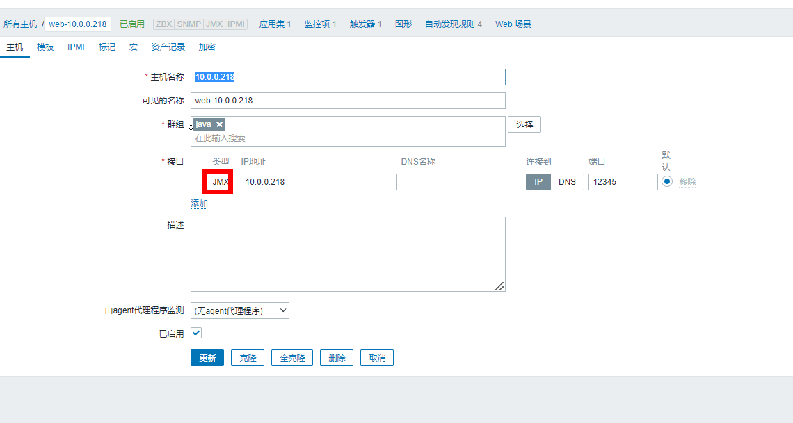</a></p>
<p>添加模板</p>
<p><a href="">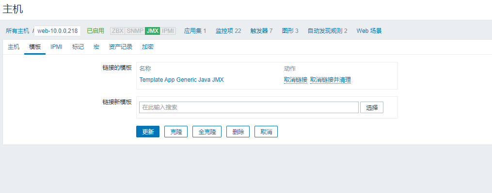</a></p>
<h1 id="八、Zabbix分布式实现Proxy"><a href="#八、Zabbix分布式实现Proxy" class="headerlink" title="八、Zabbix分布式实现Proxy"></a>八、Zabbix分布式实现Proxy</h1><p><a href="">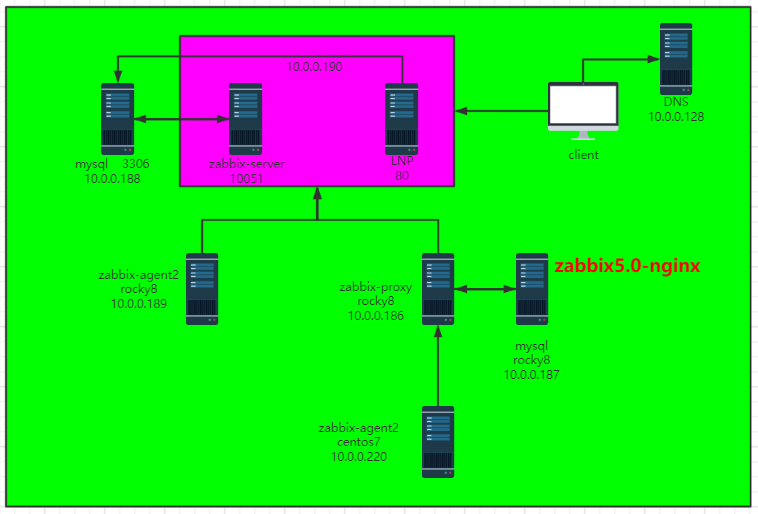</a></p>
<p>zabbix作为一个分布式监控系统(分布式监控解决方案)，支持通过代理(proxy)收集zabbix agent的监控</p>
<p>数据,然后由zabbix proxy再把数据发送给zabbix server，也就是zabbix proxy 可以代替zabbix server</p>
<p>收集监控数据，然后把数据汇报给zabbix server，所以zabbix proxy可以在一定程度上分担了zabbix </p>
<p>server的数据收集压力，从而降低了数据的采集时间、也相应的增加了zabbix server的监控能力。</p>
<p><strong>Zabbix Proxy只执行数据收集,不运行触发器,无处理事件,也不发送告警,无Web管理界面所以最终导致告警延时可能会比较长</strong></p>
<h2 id="8-1、Zabbix-Proxy安装和配置"><a href="#8-1、Zabbix-Proxy安装和配置" class="headerlink" title="8.1、Zabbix Proxy安装和配置"></a>8.1、Zabbix Proxy安装和配置</h2><p>Zabbix Proxy 也分主动模式和被动模式，通信方式与zabbix server主动模式和被动模式一样</p>
<p>Zabbix Proxy的模式 是从Zabbix Proxy 角度来说的</p>
<p>zabbix proxy在主动模式下要主动地向zabbix server周期性的申请获取zabbix agent的监控项信息,此模式可以大副降低Zabbix Server的压力,生产推荐使用</p>
<p>zabbix Proxy在被动模式下要被动地等待zabbix server的连接,并接受zabbix server发送的监控项指令，然后再由zabbix proxy向zabbix agent发起请求获取数据。</p>
<p><strong>注意</strong>: Zabbix Proxy的大版本必须要和zabbix server版本相同，否则很可能会导致出现 zabbi server与zabbix proxy不兼容问题</p>
<h3 id="8-1-1、Zabbix-Proxy和mysql安装"><a href="#8-1-1、Zabbix-Proxy和mysql安装" class="headerlink" title="8.1.1、Zabbix Proxy和mysql安装"></a>8.1.1、Zabbix Proxy和mysql安装</h3><figure class="highlight sh"><table><tr><td class="gutter"><pre><span class="line">1</span><br><span class="line">2</span><br><span class="line">3</span><br><span class="line">4</span><br><span class="line">5</span><br><span class="line">6</span><br><span class="line">7</span><br><span class="line">8</span><br><span class="line">9</span><br><span class="line">10</span><br><span class="line">11</span><br><span class="line">12</span><br><span class="line">13</span><br><span class="line">14</span><br><span class="line">15</span><br><span class="line">16</span><br><span class="line">17</span><br><span class="line">18</span><br><span class="line">19</span><br><span class="line">20</span><br><span class="line">21</span><br></pre></td><td class="code"><pre><code class="hljs sh">[root@zabbix_proxy ~]<span class="hljs-comment">#cat install_zabbix5.0_proxy_for_nginx.sh</span><br><span class="hljs-comment">#!/bin/bash</span><br>rpm -Uvh https://repo.zabbix.com/zabbix/5.0/rhel/8/x86_64/zabbix-release-5.0-1.el8.noarch.rpm<br>sed -i <span class="hljs-string">&#x27;s#http://repo.zabbix.com#https://mirrors.tuna.tsinghua.edu.cn/zabbix#&#x27;</span> /etc/yum.repos.d/zabbix.repo<br>dnf clean all<br>dnf -y install zabbix-proxy-mysql mysql-server zabbix-agent2<br>systemctl <span class="hljs-built_in">enable</span> --now mysqld<br><span class="hljs-built_in">cat</span> &lt;&lt; <span class="hljs-string">EOF | mysql</span><br><span class="hljs-string">create database zabbix_proxy character set utf8 collate utf8_bin;</span><br><span class="hljs-string">create user zabbix@&#x27;10.0.0.%&#x27; identified by &#x27;123456&#x27;;</span><br><span class="hljs-string">grant all privileges on zabbix_proxy.* to zabbix@&#x27;10.0.0.%&#x27;;</span><br><span class="hljs-string">set global log_bin_trust_function_creators = 1;</span><br><span class="hljs-string">EOF</span><br>zcat /usr/share/doc/zabbix-proxy-mysql*/schema.sql.gz | mysql -uzabbix -p123456 -h10.0.0.186 zabbix_proxy<br><span class="hljs-built_in">cat</span> &lt;&lt; <span class="hljs-string">EOF | mysql</span><br><span class="hljs-string">set global log_bin_trust_function_creators = 0;</span><br><span class="hljs-string">EOF</span><br>sed -i.bak <span class="hljs-string">&#x27;/# DBPassword/a DBPassword=123456&#x27;</span> /etc/zabbix/zabbix_server.conf<br>systemctl restart zabbix-proxy zabbix-agent2<br>systemctl <span class="hljs-built_in">enable</span> zabbix-proxy zabbix-agent2<br>[root@zabbix_proxy ~]<span class="hljs-comment">#bash install_zabbix5.0_proxy_for_nginx.sh</span><br></code></pre></td></tr></table></figure>

<h3 id="8-1-2、主动模式配置"><a href="#8-1-2、主动模式配置" class="headerlink" title="8.1.2、主动模式配置"></a>8.1.2、主动模式配置</h3><h4 id="8-1-2-1、修改proxy配置文件"><a href="#8-1-2-1、修改proxy配置文件" class="headerlink" title="8.1.2.1、修改proxy配置文件"></a>8.1.2.1、修改proxy配置文件</h4><figure class="highlight sh"><table><tr><td class="gutter"><pre><span class="line">1</span><br><span class="line">2</span><br><span class="line">3</span><br><span class="line">4</span><br><span class="line">5</span><br><span class="line">6</span><br><span class="line">7</span><br><span class="line">8</span><br><span class="line">9</span><br><span class="line">10</span><br><span class="line">11</span><br><span class="line">12</span><br><span class="line">13</span><br><span class="line">14</span><br><span class="line">15</span><br><span class="line">16</span><br><span class="line">17</span><br><span class="line">18</span><br><span class="line">19</span><br><span class="line">20</span><br><span class="line">21</span><br><span class="line">22</span><br><span class="line">23</span><br><span class="line">24</span><br><span class="line">25</span><br><span class="line">26</span><br><span class="line">27</span><br><span class="line">28</span><br><span class="line">29</span><br></pre></td><td class="code"><pre><code class="hljs sh">[root@zabbix_proxy ~]<span class="hljs-comment">#grep &#x27;^[^#]&#x27; /etc/zabbix/zabbix_proxy.conf</span><br>ProxyMode=0                 <span class="hljs-comment">#主动模式为0，被动模式为1,默认为0即主动模式</span><br>Server=10.0.0.190            <span class="hljs-comment">#指向Zabbix Server</span><br>Hostname=Zabbix_proxy_10.0.0.186   <span class="hljs-comment">#此名称必须和后面Web管理页的agent代理程序名称相同</span><br>ListenPort=10051                   <span class="hljs-comment">#开启监听端口</span><br>LogFile=/var/log/zabbix/zabbix_proxy.log<br>LogFileSize=0<br>EnableRemoteCommands=1             <span class="hljs-comment">#开启远程命令，允许server到proxy上执行命令，在故障自愈时使用</span><br>PidFile=/var/run/zabbix/zabbix_proxy.pid<br>SocketDir=/var/run/zabbix<br>DBHost=10.0.0.186<br>DBName=zabbix_proxy<br>DBUser=zabbix<br>DBPassword=123456<br>ProxyOfflineBuffer=720         <span class="hljs-comment">#当proxy和server无法连接时将数据在本地保存多长时间,默 认1小时</span><br>HeartbeatFrequency=60         <span class="hljs-comment">#server端用来检测proxy可用性的心跳信息的时间间隔,被动模式无效</span><br>ConfigFrequency=60             <span class="hljs-comment">#每间隔多少时间到server获取监控项，在agent更新端监控项，只在主动模式有效,默认3600s</span><br>DataSenderFrequency=60       <span class="hljs-comment">#数据发送的间隔时间，只在主动模式有效,默认1s,建议加长</span><br>SNMPTrapperFile=/var/log/snmptrap/snmptrap.log<br>CacheSize=8M      <span class="hljs-comment">#当主机数量很多时，会将获取的监控项存放在缓存中，生产中设置2G</span><br>StartDBSyncers=4   <span class="hljs-comment">#启动多少个线程和数据库连接</span><br>HistoryCacheSize=16M  <span class="hljs-comment">#保存agent发送过来的监控数据的内存空间大小，生产中设置2G</span><br>HistoryIndexCacheSize=4M    <span class="hljs-comment">#历史数据的索引</span><br>Timeout=30                  <span class="hljs-comment">#获取数据的最长等待时间</span><br>ExternalScripts=/usr/lib/zabbix/externalscripts<br>LogSlowQueries=3000          <span class="hljs-comment">#慢查询时长</span><br>StatsAllowedIP=127.0.0.1<br>[root@zabbix_proxy ~]<span class="hljs-comment">#systemctl restart zabbix-proxy.service</span><br><span class="hljs-comment">#Zabbix Proxy 监听10051端口开启了</span><br></code></pre></td></tr></table></figure>

<h4 id="8-1-2-2、在Zabbix-Server上添加代理Proxies"><a href="#8-1-2-2、在Zabbix-Server上添加代理Proxies" class="headerlink" title="8.1.2.2、在Zabbix Server上添加代理Proxies"></a>8.1.2.2、在Zabbix Server上添加代理Proxies</h4><p>管理– agent 代理程序(英文环境为Proxies,汉化翻译不准确)</p>
<p>注意：agent代理程序名称要和proxy 配置文件中Hostname指定的名称相同，否则会现 proxy “zabbixproxy-active” not found的日志提示</p>
<p><a href="">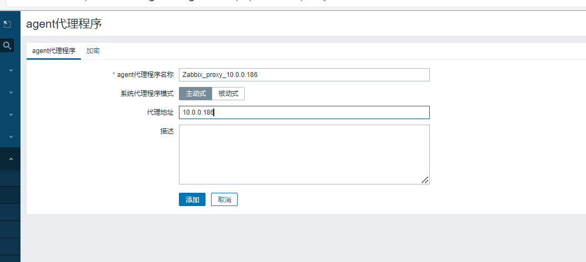</a></p>
<h4 id="8-1-2-3、在Zabbix-Server上配置Zabbix-Agent使用主动代理"><a href="#8-1-2-3、在Zabbix-Server上配置Zabbix-Agent使用主动代理" class="headerlink" title="8.1.2.3、在Zabbix Server上配置Zabbix Agent使用主动代理"></a>8.1.2.3、在Zabbix Server上配置Zabbix Agent使用主动代理</h4><p>添加zabbix agent2主机10.0.0.220</p>
<p><a href="">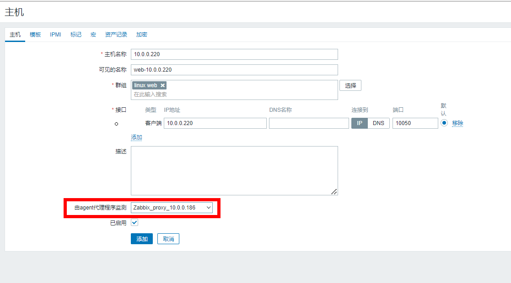</a></p>
<h4 id="8-1-2-4、修改Zabbix-Agent配置文件为主动模式的-Zabbix-Proxy"><a href="#8-1-2-4、修改Zabbix-Agent配置文件为主动模式的-Zabbix-Proxy" class="headerlink" title="8.1.2.4、修改Zabbix Agent配置文件为主动模式的 Zabbix Proxy"></a>8.1.2.4、修改Zabbix Agent配置文件为主动模式的 Zabbix Proxy</h4><figure class="highlight sh"><table><tr><td class="gutter"><pre><span class="line">1</span><br><span class="line">2</span><br><span class="line">3</span><br><span class="line">4</span><br><span class="line">5</span><br><span class="line">6</span><br></pre></td><td class="code"><pre><code class="hljs sh">[root@zabbix_agent2_centos ~]<span class="hljs-comment">#vim /etc/zabbix/zabbix_agent2.conf</span><br>Server=10.0.0.190,10.0.0.186<br>ServerActive=10.0.0.186<br>Hostname=10.0.0.22<br>:wq<br>[root@zabbix_agent2_centos ~]<span class="hljs-comment">#systemctl restart zabbix-agent2.service</span><br></code></pre></td></tr></table></figure>

<p><a href="">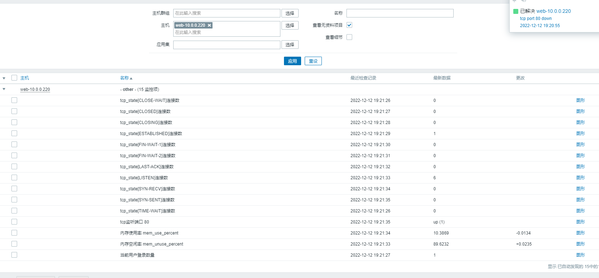</a></p>
<span id="more"></span>
            </div>
            <hr>
            <div>
              <div class="post-metas mb-3">
                
                
              </div>
              
                <p class="note note-warning">
                  
                    本博客所有文章除特别声明外，均采用 <a target="_blank" href="https://creativecommons.org/licenses/by-sa/4.0/deed.zh" rel="nofollow noopener noopener">CC BY-SA 4.0 协议</a> ，转载请注明出处！
                  
                </p>
              
              
                <div class="post-prevnext">
                  <article class="post-prev col-6">
                    
                    
                      <a href="/2022/12/09/Typora%E7%9A%84%E4%BD%BF%E7%94%A8/">
                        <i class="iconfont icon-arrowleft"></i>
                        <span class="hidden-mobile">Typora的使用</span>
                        <span class="visible-mobile">Previous</span>
                      </a>
                    
                  </article>
                  <article class="post-next col-6">
                    
                    
                      <a href="/2022/12/03/java%E7%9A%84%E7%BC%96%E8%AF%91%E5%AE%89%E8%A3%85/">
                        <span class="hidden-mobile">java的编译安装</span>
                        <span class="visible-mobile">Next</span>
                        <i class="iconfont icon-arrowright"></i>
                      </a>
                    
                  </article>
                </div>
              
            </div>

            
          </article>
        </div>
      </div>
    </div>
    
      <div class="d-none d-lg-block col-lg-2 toc-container" id="toc-ctn">
        <div id="toc">
  <p class="toc-header"><i class="iconfont icon-list"></i>&nbsp;TOC</p>
  <div class="toc-body" id="toc-body"></div>
</div>

      </div>
    
  </div>
</div>

<!-- Custom -->


    

    
      <a id="scroll-top-button" aria-label="TOP" href="#" role="button">
        <i class="iconfont icon-arrowup" aria-hidden="true"></i>
      </a>
    

    
      <div class="modal fade" id="modalSearch" tabindex="-1" role="dialog" aria-labelledby="ModalLabel"
     aria-hidden="true">
  <div class="modal-dialog modal-dialog-scrollable modal-lg" role="document">
    <div class="modal-content">
      <div class="modal-header text-center">
        <h4 class="modal-title w-100 font-weight-bold">Search</h4>
        <button type="button" id="local-search-close" class="close" data-dismiss="modal" aria-label="Close">
          <span aria-hidden="true">&times;</span>
        </button>
      </div>
      <div class="modal-body mx-3">
        <div class="md-form mb-5">
          <input type="text" id="local-search-input" class="form-control validate">
          <label data-error="x" data-success="v"
                 for="local-search-input">keyword</label>
        </div>
        <div class="list-group" id="local-search-result"></div>
      </div>
    </div>
  </div>
</div>
    

    
  </main>

  <footer class="text-center mt-5 py-3">
  <div class="footer-content">
     <a href="https://hexo.io" target="_blank" rel="nofollow noopener"><span>Hexo</span></a> <i class="iconfont icon-love"></i> <a href="https://github.com/fluid-dev/hexo-theme-fluid" target="_blank" rel="nofollow noopener"><span>Fluid</span></a> 
  </div>
  

  

  
</footer>


  <!-- SCRIPTS -->
  
  <script  src="https://cdn.jsdelivr.net/npm/nprogress@0/nprogress.min.js" ></script>
  <link  rel="stylesheet" href="https://cdn.jsdelivr.net/npm/nprogress@0/nprogress.min.css" />

  <script>
    NProgress.configure({"showSpinner":false,"trickleSpeed":100})
    NProgress.start()
    window.addEventListener('load', function() {
      NProgress.done();
    })
  </script>


<script  src="https://cdn.jsdelivr.net/npm/jquery@3/dist/jquery.min.js" ></script>
<script  src="https://cdn.jsdelivr.net/npm/bootstrap@4/dist/js/bootstrap.min.js" ></script>
<script  src="/js/events.js" ></script>
<script  src="/js/plugins.js" ></script>

<!-- Plugins -->


  <script  src="/js/local-search.js" ></script>


  
    <script  src="/js/img-lazyload.js" ></script>
  


  


  
    <script  src="https://cdn.jsdelivr.net/npm/tocbot@4/dist/tocbot.min.js" ></script>
  
  
    <script  src="https://cdn.jsdelivr.net/npm/@fancyapps/fancybox@3/dist/jquery.fancybox.min.js" ></script>
  
  
    <script  src="https://cdn.jsdelivr.net/npm/anchor-js@4/anchor.min.js" ></script>
  
  
    <script defer src="https://cdn.jsdelivr.net/npm/clipboard@2/dist/clipboard.min.js" ></script>
  


  <script  src="https://cdn.jsdelivr.net/npm/typed.js@2/lib/typed.min.js" ></script>
  <script>
    (function (window, document) {
      var typing = Fluid.plugins.typing;
      var title = document.getElementById('subtitle').title;
      
        typing(title);
      
    })(window, document);
  </script>


<!-- 主题的启动项 保持在最底部 -->
<script  src="/js/boot.js" ></script>


</body>
</html>
